前置信息Front matter
青藏高原积雪对东亚夏季风年际变率的影响
Impacts of Tibetan Plateau Snow Cover on the Interannual Variability of the East Asian Summer Monsoon
ZHIXIANG XIAO
ZHIXIANG XIAO
大气科学和地球流体力学数值模拟国家重点实验室，中国科学院大气物理研究所，北京；广西气象台，中国南宁
State Key Laboratory of Numerical Modeling for Atmospheric Sciences and Geophysical Fluid Dynamics, Institute of Atmospheric Physics, Chinese Academy of Sciences, Beijing, and Guangxi Meteorological Observatory, Nanning, China
ANMIN DUAN
ANMIN DUAN
大气科学和地球流体力学数值模拟国家重点实验室，中国科学院大气物理研究所，北京；气象灾害预报与评估协同创新中心，南京信息工程大学，中国南京
State Key Laboratory of Numerical Modeling for Atmospheric Sciences and Geophysical Fluid Dynamics, Institute of Atmospheric Physics, Chinese Academy of Sciences, Beijing, and Collaborative Innovation Center on Forecast and Evaluation of Meteorological Disasters, Nanjing University of Information Science and Technology, Nanjing, China
（稿件于2015年12月28日收到，2016年8月18日定稿）
(Manuscript received 28 December 2015, in final form 18 August 2016)
与本文相关的补充信息可在期刊在线网站获取：http://dx.doi.org/10.1175/JCLI-D-16-0029.s1。
Supplemental information related to this paper is available at the Journals Online website: http://dx.doi.org/10.1175/JCLI-D-16-0029.s1.
通讯作者地址：Anmin Duan 博士，LASG，中国科学院大气物理研究所，北京邮政信箱9804，中国北京100029。
Corresponding author address: Dr. Anmin Duan, LASG, Institute of Atmospheric Physics, Chinese Academy of Sciences, P.O. Box 9804, Beijing 100029, China.
电子邮箱：amduan@lasg.iap.ac.cn
E-mail: amduan@lasg.iap.ac.cn
摘要Abstract
摘要
ABSTRACT
青藏高原（TP）积雪与东亚夏季风（EASM）之间的关系长期以来一直受到讨论，但其内在机制仍存在争议。
The relationship between Tibetan Plateau (TP) snow cover and the East Asian summer monsoon (EASM) has long been discussed, but the underlying mechanism remains controversial.
本文基于1979–2011年多源积雪数据，研究青藏高原上的积雪—反照率反馈和积雪—水文反馈。
In this paper, the snow–albedo and snow–hydrology feedbacks over the TP are investigated based on multiple sources of snow data for the period 1979–2011.
结果表明，冬季积雪通过积雪—反照率效应，在降低当地气温方面发挥重要作用；积雪偏多年青藏高原地表净太阳辐射比积雪偏少年约低18 W m⁻²。
The results indicate that winter snow cover plays an important role in cooling local air temperature through the snow–albedo effect; the TP surface net solar radiation in years with above-normal snow cover is approximately 18 W m⁻² less than that in below-normal snow cover years.
然而，数据分析表明，在青藏高原中东部大部分地区，冬季积雪的持续效应仅限于冬季至春季。
However, data analysis demonstrates that persistent effects of winter snow cover are limited to the period from winter to spring over most parts of the central and eastern TP.
因此，由于持续性有限，青藏高原中东部的前期积雪对当地夏季大气热源和东亚夏季风均影响很小。
Therefore, the preceding snow cover over the central and eastern TP exerts little influence over either the in situ summer atmospheric heat source or the EASM, because of its limited persistence.
相比之下，青藏高原西部和喜马拉雅地区冬季或春季积雪异常的影响可持续至夏季；这些异常还会通过调节向中国东部的水汽输送，并促进青藏高原上生成的天气尺度扰动向东传播，进一步影响东亚夏季风。
In contrast, the effects of winter or spring snow cover anomalies over the western TP and the Himalayas can last until summer, and these anomalies further influence the EASM by modulating moisture transport to eastern China and favoring eastward-propagating synoptic disturbances that are generated over the TP.
总体而言，青藏高原西部和喜马拉雅地区积雪偏多有利于长江与黄河流域之间出现充沛的夏季降水，区域天气研究与预报模式的模拟结果证实了这一点。
Generally, above-normal snow cover over the western TP and the Himalayas facilitates abundant summer precipitation between the Yangtze and Yellow River basins, which is confirmed by results from a regional Weather Research and Forecasting model simulation.
1. 引言1. Introduction
1. 引言
1. Introduction
积雪凭借其高反射率、高发射率和低导热率，对当地地表辐射收支和水文通量产生显著影响（Yasunari et al. 1991; Mote 2008; Xu and Dirmeyer 2013）。
Snow cover exerts a significant influence on local surface radiation budgets and hydrological fluxes through its high reflectivity, high emissivity, and low thermal conductivity (Yasunari et al. 1991; Mote 2008; Xu and Dirmeyer 2013).
然而，除局地效应外，积雪还可能影响下游气候系统（Xu et al. 2012）和全球气候（Barnett et al. 1988, 1989）。
However, in addition to local effects, snow cover might also impact downstream climate systems (Xu et al. 2012) and the global climate (Barnett et al. 1988, 1989).
长期以来，欧亚大陆积雪一直被认为会显著影响亚洲夏季风。
Eurasian snow cover has long been thought to significantly influence the Asian summer monsoon.
一个多世纪以前，Blanford（1884）和 Walker（1910）发现，喜马拉雅地区冬季积雪与随后印度夏季风期间的降雨呈负相关；Hahn and Shukla（1976）首次利用卫星反演的欧亚大陆积雪数据验证了 Blanford（1884）发现的这一关系。
More than a century ago, Blanford (1884) and Walker (1910) found a negative relationship between the winter snow cover over the Himalayas and the subsequent rainfall during the Indian summer monsoon, and Hahn and Shukla (1976) were the first to use satellite-derived Eurasian snow cover data to verify the relationship found by Blanford (1884).
随后，Chen and Yan（1979）利用气象站积雪数据得出结论：青藏高原（TP）冬春季积雪可能是华南前汛期降雨的重要预测因子。
Later, using snow cover data from meteorological stations, Chen and Yan (1979) concluded that the winter–spring snow cover of the Tibetan Plateau (TP) may be an important predictor of rainfall in southern China during the pre-rainy period.
同样，许多研究（例如 Yasunari et al. 1991; Ose 1996; Bamzai and Shukla 1999; Chen and Wu 2000; Wu and Qian 2003; Zhao et al. 2007; Liu et al. 2014a,b）关注了青藏高原积雪与东亚夏季风（EASM）之间的关系，并提出了积雪影响东亚夏季风的一些潜在机制。
Similarly, many studies (e.g., Yasunari et al. 1991; Ose 1996; Bamzai and Shukla 1999; Chen and Wu 2000; Wu and Qian 2003; Zhao et al. 2007; Liu et al. 2014a,b) have focused on the relationship between TP snow cover and the East Asian summer monsoon (EASM), and some potential mechanisms for the impact of snow cover on the EASM have been proposed.
Chen et al.（2000）发现，青藏高原冬季积雪偏多可能触发厄尔尼诺事件并减弱随后的夏季风，从而导致长江中下游地区降雨增多。
Chen et al. (2000) found that above-normal TP winter snow cover may trigger El Niño events and weaken the subsequent summer monsoon, leading to more rainfall over the middle and lower reaches of the Yangtze River valley.
Zhang and Tao（2001）认为，青藏高原积雪增多会减弱地表感热，并降低青藏高原周边的下对流层温度。
Zhang and Tao (2001) argued that more snow cover over the TP will weaken the sensible heat of the surface and the lower tropospheric temperature surrounding the TP.
这将减小对流层海陆温差并减弱东亚夏季风，进而导致长江夏季洪涝。
This will reduce the tropospheric land–sea temperature contrast and weaken the EASM, which will lead to summer flooding of the Yangtze River.
较近时期，Y. S. Zhang et al.（2004）提出，青藏高原融雪可降低地表温度，并为向东移动的低层涡旋发展提供充足水分。
More recently, Y. S. Zhang et al. (2004) suggested that snowmelt over the TP can cool surface temperatures and provide sufficient moisture for the development of eastward-migrating low-level vortices.
Liu et al.（2014a）发现，青藏高原西部夏季积雪过多会抑制当地垂直运动，继而通过经向垂直环流系统有利于北印度洋上空的上升运动，从而有利于降水发生。
Liu et al. (2014a) found that excessive summer snow cover over the western TP suppresses local vertical motion and, consequently, benefits upward motion over the north Indian Ocean via a meridional vertical circulation system, which is favorable for the occurrence of precipitation.
随后，热带地区出现开尔文波型响应，引发东风异常，并通过一个纬向环流系统在西太平洋暖池上空形成下沉运动。
A Kelvin wave–type response over the tropics then takes place, inducing easterly wind anomalies, and, through a zonal circulation system, sinks over the western Pacific warm pool.
西太平洋受抑制的对流活动会激发东亚—太平洋遥相关型，并影响梅雨雨带。
The suppressed convective activity in the western Pacific stimulates the East Asia–Pacific teleconnection pattern and affects the mei-yu rain belt.
因此，可从两个方面考虑青藏高原积雪对东亚夏季风的影响：一是积雪的局地效应，即积雪偏多可能减弱地表加热，而积雪—水文效应会延长这种作用（Yasunari et al. 1991; Zhang and Tao 2001; Qian et al. 2003; Y. S. Zhang et al. 2004; Zhu et al. 2009）；二是积雪与热带大气之间的相互作用（Chen et al. 2000; Liu et al. 2014a）。
Thus, two aspects of the effect of TP snow cover on the EASM can be considered: the local effect of snow cover, in which excessive snow cover may weaken surface heating, prolonged by the snow–hydrology effect (Yasunari et al. 1991; Zhang and Tao 2001; Qian et al. 2003; Y. S. Zhang et al. 2004; Zhu et al. 2009); and the interaction between snow cover and the tropical atmosphere (Chen et al. 2000; Liu et al. 2014a).
尽管已提出许多积雪影响东亚夏季风的潜在机制，但一些研究认为，欧亚大陆积雪对后续大气环流的影响有限。
Despite many potential mechanisms for the effect of snow cover on the EASM having been proposed, a number of studies have maintained that Eurasian snow cover has a limited influence on subsequent atmospheric circulation.
Cohen and Rind（1991）认为，由于地表能量收支中的负反馈，积雪只会使当地地表温度短期下降；积雪消退期引发的地表气温异常将在5月减弱（Ueda et al. 2003）。
Cohen and Rind (1991) argued that snow cover causes only a short-term decrease in local surface temperature, due to negative feedbacks in the surface energy budget; the surface air temperature anomalies induced during the snow disappearance period will diminish in May (Ueda et al. 2003).
在广阔的欧亚大陆上，积雪—水文效应对夏季降水的影响主要在西西伯利亚平原被检测到（Wu et al. 2014），该地区的土壤湿度异常可持续三个多月。
Over the vast Eurasian continent, the snow–hydrology effect on summer precipitation has mainly been detected over the west Siberian plain (Wu et al. 2014), where soil moisture anomalies persist for more than three months.
基于全球气候模式结果，Zwiers（1993）发现，青藏高原春季积雪与随后亚洲夏季风之间的联系很弱。
Based on global climate model results, Zwiers (1993) found the TP spring snowpack to be only weakly connected to the subsequent Asian summer monsoon.
由于持续性有限，冬季积雪无法从物理上控制夏季风，因为异常积雪对温度的影响不能通过土壤湿度反馈得到延续（Robock et al. 2003）。
Because of its limited persistence, winter snow cover cannot physically control the summer monsoon because the impact of anomalous snow cover on temperature cannot be prolonged by soil moisture feedbacks (Robock et al. 2003).
在一定程度上，不同作者所得结果的差异源于积雪数据集存在很大的不确定性。
To a certain degree, the contrasting results obtained by different authors are due to the large uncertainties in snow cover datasets.
积雪主要通过积雪—反照率效应和积雪—水文效应影响大气（Hahn and Shukla 1976; Yeh et al. 1983; Yasunari et al. 1991; Souma and Wang 2010）。
Snow cover mainly affects the atmosphere through the snow–albedo effect and the snow–hydrology effect (Hahn and Shukla 1976; Yeh et al. 1983; Yasunari et al. 1991; Souma and Wang 2010).
以往研究强调了青藏高原冬季积雪与东亚夏季风之间的稳健关系，并尝试阐明其中在夏季发挥作用的潜在机制（Chen et al. 2000; Zhang and Tao 2001; Y. S. Zhang et al. 2004; Xu et al. 2012）。
Previous studies have emphasized a robust relationship between winter TP snow cover and the EASM, and have attempted to illustrate the potential mechanism involved in summer (Chen et al. 2000; Zhang and Tao 2001; Y. S. Zhang et al. 2004; Xu et al. 2012).
然而，此类研究很少关注不同青藏高原积雪状况下反照率和土壤湿度从冬季到夏季的演变。
However, research of this nature has rarely focused on the evolution of albedo and soil moisture from winter to summer under different TP snow cover conditions.
因此，我们仍不清楚积雪—反照率效应和积雪—水文效应是否会在夏季继续显著影响大气环流，尤其是在青藏高原中东部。
Therefore, we still do not know whether the snow–albedo and snow–hydrology effects continue to significantly influence general circulation in summer, especially over the central and eastern TP.
根据气象站资料，该地区冬季积雪与东亚夏季风显著相关（Chen and Wu 2000; Chen et al. 2000; Zhang and Tao 2001; Xu et al. 2012），但当地积雪远少于青藏高原西部和喜马拉雅地区。
Based on meteorological station data, winter snow cover in this region correlates significantly with the EASM (Chen and Wu 2000; Chen et al. 2000; Zhang and Tao 2001; Xu et al. 2012), but the in situ snow cover is much less than that in the western TP and the Himalayas.
本研究提出以下问题：青藏高原冬春季积雪异常能否影响东亚夏季风的年际变率？
In this study, we ask the following: Can winter and spring snow cover anomalies over the TP influence the interannual variability of the EASM?
如果能，青藏高原的哪些地区起作用？
If so, which parts of the TP are responsible?
造成这种滞后影响的内在物理机制又是什么？
And what is the intrinsic physical mechanism responsible for such a delayed impact?
我们通过数据分析回答这些问题，并利用模式模拟验证所得结果，全文安排如下：第2节介绍数据和方法；第3节给出青藏高原中东部的积雪—反照率效应和积雪—水文效应；第4节讨论青藏高原西部及喜马拉雅地区积雪对东亚夏季风的影响；第5节考察模式结果；第6节以总结和讨论结束全文。
We answer these questions through data analysis, and verify the findings via a model simulation, reported as follows: in section 2, the data and methodology are described; section 3 presents the snow–albedo and snow–hydrology effects over the central and eastern TP; section 4 discusses the impacts of snow cover over the western TP and Himalayas on the EASM; the model results are examined in section 5; and a summary and discussion conclude the paper in section 6.
2. 数据与方法（a. 数据；b. 方法）2. Data and methodology (a. Data; b. Methodology)
2. 数据和方法
2. Data and methodology
a. 数据
a. Data
本研究所用数据包括：
The data used in this work include the following:
1）1979–2011年中国756个气象站的逐日地面观测雪深、降水、地表温度、冻土上界深度和积雪日数（NSCD），其中92个站位于青藏高原中东部（Fig. 1a，黑点）；数据由中国气象局（CMA）提供。
1) Daily surface-observed snow depth, precipitation, ground surface temperature, depth of the upper frozen soil boundary, and the number of snow cover days (NSCDs), during 1979–2011, collected from 756 meteorological stations across China, 92 of which are situated in the central and eastern TP (Fig. 1a, black dots), provided by the China Meteorological Administration (CMA).
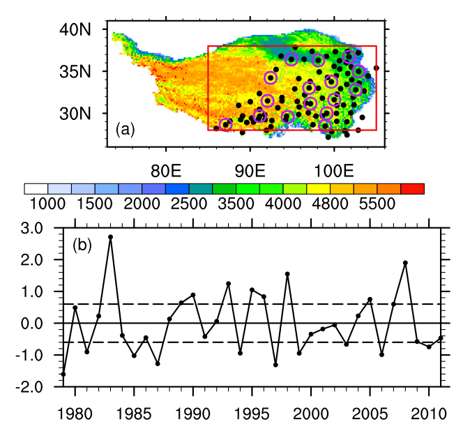
(a) TP上92个地面气象站（黑点）的空间分布，其中包括16个探空站（紫色空心圆）。
(a) Spatial distribution of 92 surface meteorological stations (black dots) including 16 radiosonde stations (purple open circles), across the TP.
红色矩形表示TP中部和东部（28°–38°N, 85°–105°E）。
The red rectangle represents the central and eastern TP (28°–38°N, 85°–105°E).
彩色阴影表示海拔≥1000 m的地形。
The colored shading denotes topography ≥1000 m above sea level.
(b) 1979–2011年TP上92个台站（Fig. 1a，黑点）平均的标准化冬季NSCD指数时间序列，已去除线性趋势。
(b) Time series of the standardized winter NSCD index, averaged across the 92 stations (Fig. 1a, black dots) over the TP from 1979 to 2011 with the linear trend removed.
虚线表示±0.6个标准差。
The dashed lines indicate ±0.6 standard deviations.
本文还使用了中国气象局提供的同期（1979–2011年）青藏高原中东部16个探空站的月平均气温记录（Fig. 1a，空心圆）。
Monthly air temperature records from 16 radiosonde stations over the central and eastern TP (Fig. 1a, open circles), for the same period (1979–2011), again from the CMA, are also used.
共有12个标准气压层（500、400、300、250、200、150、100、70、50、30、20和10 hPa）。
There are 12 standard pressure levels (500, 400, 300, 250, 200, 150, 100, 70, 50, 30, 20, and 10 hPa).
按照 Duan and Wu（2008），青藏高原中东部的大气热源—热汇定义为地表感热通量（采用整体空气动力学方法计算）、凝结向大气释放的潜热和气柱净辐射通量三者的算术和［后者基于气象站和卫星辐射数据集 GEWEX SRB（即地表辐射收支；Stackhouse et al. 2004）］。
Following Duan and Wu (2008), the atmospheric heat source–sink over the central and eastern TP is defined as the arithmetic sum of the surface sensible heat flux (calculated by the bulk aerodynamic method), the latent heat released to the atmosphere by condensation, and the air column net radiation flux [based on the station and satellite radiation dataset GEWEX SRB (i.e., surface radiation budget; Stackhouse et al. 2004)].
本文所有通量均规定向下为正。
All fluxes in this paper are defined as positive in the downward direction.
2）美国国家冰雪数据中心（NSIDC；http://nsidc.org/）提供的卫星反演雪深数据，这些数据基于扫描多通道微波辐射计（SMMR；1979–87年）、专用传感器微波成像仪（SSM/I；1987–2008年）和先进微波扫描辐射计—地球观测系统（AMSR-E；2002–10年）的测量。
2) Satellite-derived snow depth data, obtained from the U.S. National Snow and Ice Data Center (NSIDC; http://nsidc.org/), based on measurements by the Scanning Multichannel Microwave Radiometer (SMMR; 1979–87), the Special Sensor Microwave Imager (SSM/I; 1987–2008), and the Advanced Microwave Scanning Radiometer-Earth Observing System (AMSR-E; 2002–10).
Dai and Che（2010）采用针对中国改进的算法，获得了1979–2011年空间分辨率为0.25° × 0.25°的雪深。
Using an improved algorithm for China, Dai and Che (2010) determined snow depths at a spatial resolution of 0.25° × 0.25° during 1979–2011.
此外，还使用了由 SMMR 和 SSM/I 反演的1979–2006年月平均卫星积雪水当量（SWE）数据（Armstrong et al. 2005），以及 NSIDC 提供的1967–2011年逐周积雪覆盖数据。
In addition, the monthly satellite-derived snow water equivalent (SWE) data for the period 1979–2006, derived from SMMR and SSM/I (Armstrong et al. 2005), and weekly snow cover data for 1967–2011, obtained from NSIDC, are also used.
NSIDC 的 SWE 和积雪覆盖数据被网格化到25 km等面积可缩放地球网格上。
The NSIDC SWE and snow cover data are gridded to 25-km equal-area scalable Earth grids.
最后，本文还使用了罗格斯大学全球积雪实验室（http://climate.rutgers.edu/snowcover/）提供的1967–2013年月平均积雪覆盖数据，该数据采集自北半球89 × 89个网格点。
Last, monthly snow cover data, for the period 1967–2013, collected from 89 × 89 grid points over the Northern Hemisphere, obtained from the Rutgers University Global Snow Laboratory (http://climate.rutgers.edu/snowcover/), are used.
为便于分析，将 SWE 和积雪覆盖数据重新网格化至规则的0.25° × 0.25°网格。
For convenience, the SWE and snow cover data are regridded to regular 0.25° × 0.25° grid for analysis.
3）三套月平均卫星辐射产品：（i）GEWEX SRB（Stackhouse et al. 2004）3.0版，时段为1984–2007年，空间分辨率为1° × 1°；（ii）ISCCP-D2（Y. C. Zhang et al. 2004），时段为1984–2009年，空间分辨率为2.5° × 2.5°；（iii）CERES（Wielicki et al. 1996），始于2000年，空间分辨率为1° × 1°。
3) Three monthly satellite radiation products: (i) GEWEX SRB (Stackhouse et al. 2004), version 3.0, for the period 1984–2007, with a spatial resolution of 1° × 1°; (ii) ISCCP-D2 (Y. C. Zhang et al. 2004), for the period 1984–2009, with a spatial resolution of 2.5° × 2.5°; and (iii) CERES (Wielicki et al. 1996), starting from 2000, with a spatial resolution of 1° × 1°.
4）欧洲中期天气预报中心中期再分析资料（ERA-Interim；Dee et al. 2011）提供的1979–2011年月平均大气变量，包括风、地面气压、比湿和温度，均位于规则的1.5° × 1.5°网格上。
4) Monthly mean atmospheric variables, for the period 1979–2011, including winds, surface pressure, specific humidity, and temperature, from the European Centre for Medium-Range Weather Forecasts interim reanalysis (ERA-Interim; Dee et al. 2011), all on regular 1.5° × 1.5° grid.
需要指出的是，采用日本55年再分析资料（Ebita et al. 2011）得到的结果相似。
Note that similar results were obtained from the Japanese 55-year Reanalysis (Ebita et al. 2011).
本文还使用了全球陆面数据同化系统第2版（GLDAS-2）产品中 Noah 陆面模式的地表蒸散发和0–10 cm土壤湿度数据（Rodell et al. 2004）；该数据自1948年起提供，网格分辨率为1° × 1°。
Also used are the surface evapotranspiration and 0–10-cm soil moisture data from the Noah land surface model from Global Land Data Assimilation System version 2 (GLDAS-2) products (Rodell et al. 2004); the data are available as 1° × 1° grid starting from 1948.
5）月平均降水数据集，包括亚洲降水—水资源评价高分辨率观测数据整合（APHRODITE；http://www.chikyu.ac.jp/precip/），以及基于雨量计的 APHRODITE（MA V1101）0.25° × 0.25°网格降水数据集；后者覆盖1951–2007年及亚洲陆地大部分地区。
5) Monthly precipitation datasets, including the Asian Precipitation–Highly Resolved Observational Data Integration Toward Evaluation of Water Resources (APHRODITE; http://www.chikyu.ac.jp/precip/), and the gauge-based APHRODITE (MA V1101) gridded (0.25° × 0.25°) precipitation dataset, which spans the period 1951–2007 and covers most parts of the Asian land surface.
本文使用了气候预测中心（CPC）降水合并分析（CMAP；Xie and Arkin 1997）与全球降水气候计划（GPCP V2.2；Adler et al. 2003）的全球月平均降水组合数据集；两者均自1979年1月起在2.5° × 2.5°网格上提供。
The combined global monthly mean precipitation datasets of the Climate Prediction Center (CPC) Merged Analysis of Precipitation (CMAP; Xie and Arkin 1997) and the Global Precipitation Climatology Project (GPCP V2.2; Adler et al. 2003) are used, both of which are available on 2.5° × 2.5° grid starting from January 1979.
b. 方法
b. Methodology
由于本研究关注年际变率，我们首先去除所有时间序列的线性趋势，随后按照 Qian et al.（2011）的方法，从去趋势序列中减去9年滑动平均。
Because this study focuses on interannual variability, linear trends are removed from all of the time series; we then subtract the 9-yr running average from the trend-removed series, following the method of Qian et al. (2011).
该方法计算量较小，使用方便，所得结果与谐波分析结果几乎相同。
This method is convenient as it involves less computation, and the results are almost the same as those from harmonic analysis.
厄尔尼诺—南方涛动（ENSO）对东亚夏季风有显著影响（例如 Wang et al. 2000; Huang et al. 2004）。
El Niño–Southern Oscillation (ENSO) exerts a substantial impact of the EASM (e.g., Wang et al. 2000; Huang et al. 2004).
因此，第4节在考察青藏高原积雪是否影响东亚夏季风时，必须去除 ENSO 信号。
Therefore, when considering whether TP snow cover has an impact on the EASM in section 4, the ENSO signal must be removed.
按照 Gong et al.（2011），我们通过回归分析去除 ENSO 信号。
Following Gong et al. (2011), we remove the ENSO signal by means of regression analysis.
将气候变量对 Niño-3 指数（前一年12月至当年5月的平均值）进行回归，并采用最小二乘法由回归系数和 Niño-3 指数构建一个新的时间序列，将其视为 ENSO 相关分量。
The climate variables are regressed onto the Niño-3 index (averaged from the preceding December–May), and a new time series is produced by the regression coefficient and Niño-3 index using the least squares technique, which is regarded as the ENSO-related component.
随后，从原始时间序列中减去 ENSO 相关分量，并将残差视为“不含 ENSO”的部分。
Then, the ENSO-related component is subtracted from the original time series, and the residuals are regarded as the ‘‘ENSO free’’ parts.
3. 青藏高原中东部的积雪影响3. Snow cover effects over the central and eastern TP
3. 青藏高原中东部的积雪效应
3. Snow cover effects over the central and eastern TP
由于环境恶劣且人口稀少，平均海拔超过4000 m的青藏高原缺乏常规气象观测。
Routine meteorological observations over the TP, which has an average altitude greater than 4000 m above sea level, are lacking due to the severe environment and the sparse population.
青藏高原内地面气象站密度仅为每10⁶ km² 34个站。
The density of surface meteorological stations within the TP is only 34 stations per 10⁶ km².
大多数气象站位于青藏高原中东部，因此其站点密度显著低于中国平均每10⁶ km² 260个站的水平（Duan et al. 2014）。
Most of the stations are located in the central and eastern TP, which makes for a significantly lower density than the average of 260 stations per 10⁶ km² over China (Duan et al. 2014).
因此，先前研究所报告的整个高原积雪存在很大不确定性（Chen et al. 2000; Zhang and Tao 2001; Xu et al. 2012; Wu et al. 2012b）。
Thus, the snow cover across the plateau reported by previous studies exhibits large uncertainties (Chen et al. 2000; Zhang and Tao 2001; Xu et al. 2012; Wu et al. 2012b).
Figure 1b给出了1979–2011年青藏高原中东部92个站（Fig. 1a，黑色实心点）平均的冬季（12月至次年2月）NSCD指数年际变化。
Figure 1b shows the interannual variation of the winter (December–February) NSCD index, averaged across 92 stations (Fig. 1a, black solid dots), for the period 1979–2011, over the central and eastern TP.
标准化NSCD指数值大于0.6的冬季被视为积雪偏多年（即1982/83、1988/89、1989/90、1992/93、1994/95、1995/96、1997/98、2004/05和2007/08年），指数值小于−0.6的冬季被视为积雪偏少年（即1978/79、1980/81、1984/85、1986/87、1993/94、1996/97、1998/99、2002/03、2005/06和2009/10年）。
The winters with a standardized NSCD index value greater than 0.6 are considered to be excessive snow cover years (i.e., 1982/83, 1988/89, 1989/90, 1992/93, 1994/95, 1995/96, 1997/98, 2004/05, and 2007/08), and those with a value less than −0.6 are considered to be deficient snow cover years (i.e., 1978/79, 1980/81, 1984/85, 1986/87, 1993/94, 1996/97, 1998/99, 2002/03, 2005/06, and 2009/10).
Figure 2给出了基于不同积雪数据集的积雪偏多年与偏少年之差。
The differences between excessive and deficient snow cover years, based on different snow datasets, are presented in Fig. 2.
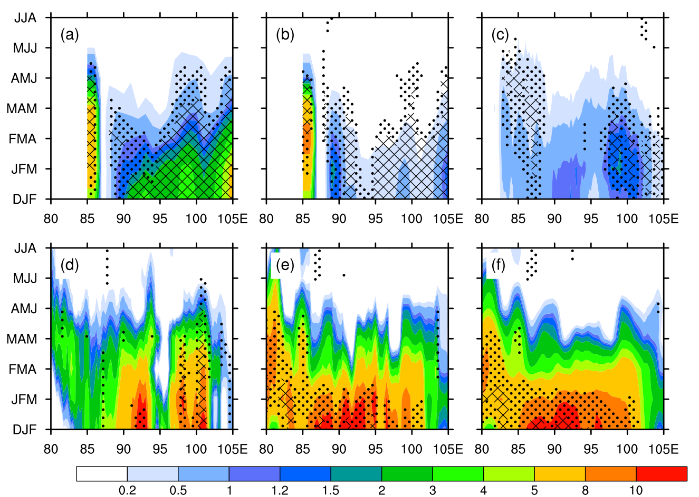
基于28°–38°N平均的冬季NSCD指数，积雪偏多年与偏少年之间各积雪数据集的经度—3个月平均差异（从DJF至JJA共7类）：(a) 台站观测NSCD（days），(b) 台站观测雪深（cm），(c) 经Dai and Che (2010)改进的卫星反演雪深（cm），(d) NSIDC卫星反演SWE（mm），(e) NSIDC卫星反演积雪覆盖率（%），以及(f) Rutgers University卫星反演积雪覆盖率（%）。
Longitude vs 3-month (in seven categories from DJF through JJA) differences of snow datasets between above- and below- normal snow cover years, based on the winter NSCD index averaged from 28° to 38°N: (a) station-observed NSCDs (days), (b) station- observed snow depth (cm), (c) satellite-derived snow depth (cm) improved by Dai and Che (2010), (d) satellite-derived SWE (mm) obtained from NSIDC, (e) satellite-derived snow cover (%) obtained from NSIDC, and (f) satellite-derived snow cover (%) obtained from Rutgers University.
点状（交叉阴影）区域表示根据Student’s t检验达到90%（95%）置信水平；后续各图也采用这一约定。
The dotted (cross-hatched) regions indicate statistical significance at the 90% (95%) confidence level according to the Student’s t test; this convention is also used in subsequent figures.
结果表明，积雪偏多年与偏少年之间的NSCD存在显著差异（Fig. 2a），站点观测雪深亦是如此（Fig. 2b）。
The results show that NSCDs are significantly different between excessive and deficient snow cover years (Fig. 2a), and the same is true for station-observed snow depth (Fig. 2b).
对于卫星反演积雪数据集（Figs. 2c–f），尽管显著性较低，结果仍然相似；与站点观测相比，卫星雪深［Fig. 2c，经Dai and Che（2010）改进］总体上优于其他积雪数据集。
In terms of the satellite-derived snow datasets (Figs. 2c–f), the results are similar despite being less significant, and the satellite snow depth [Fig. 2c, improved by Dai and Che (2010)] generally performs better than other snow datasets compared with station observations.
在不同积雪数据集（Fig. 2）中，青藏高原中东部大部分地区冬季和春季（3–5月）的积雪异常均很明显；到6月仍存在显著异常信号的仅有少数地区。
Snow cover anomalies are apparent in winter and spring (March–May) over most parts of the central and eastern TP in different snow datasets (Fig. 2); significant abnormal signals are only found in a few areas until June.
换言之，冬季积雪无法持续到夏季，青藏高原中东部的大部分积雪在晚春融化。
In other words, winter snow cover cannot persist until summer, and most of the snow cover melts in late spring over the central and eastern TP.
a. 雪—反照率效应a. Snow–albedo effect
a. 积雪—反照率效应
a. Snow–albedo effect
积雪的存在可能显著改变地表反照率，本文将其定义为地表向上短波辐射与向下短波辐射之比。
The presence of snow cover may significantly change surface albedo, which is defined here as the ratio between surface upward and downward shortwave radiation.
如Figs. 3a–c所示，青藏高原中东部积雪增多会提高地表反照率；晚春积雪融尽后，反照率异常迅速减弱（Fig. 2）。
As shown in Figs. 3a–c, greater snow cover over the central and eastern TP increases surface albedo, and albedo anomalies quickly diminish after snow melts away in late spring (Fig. 2).
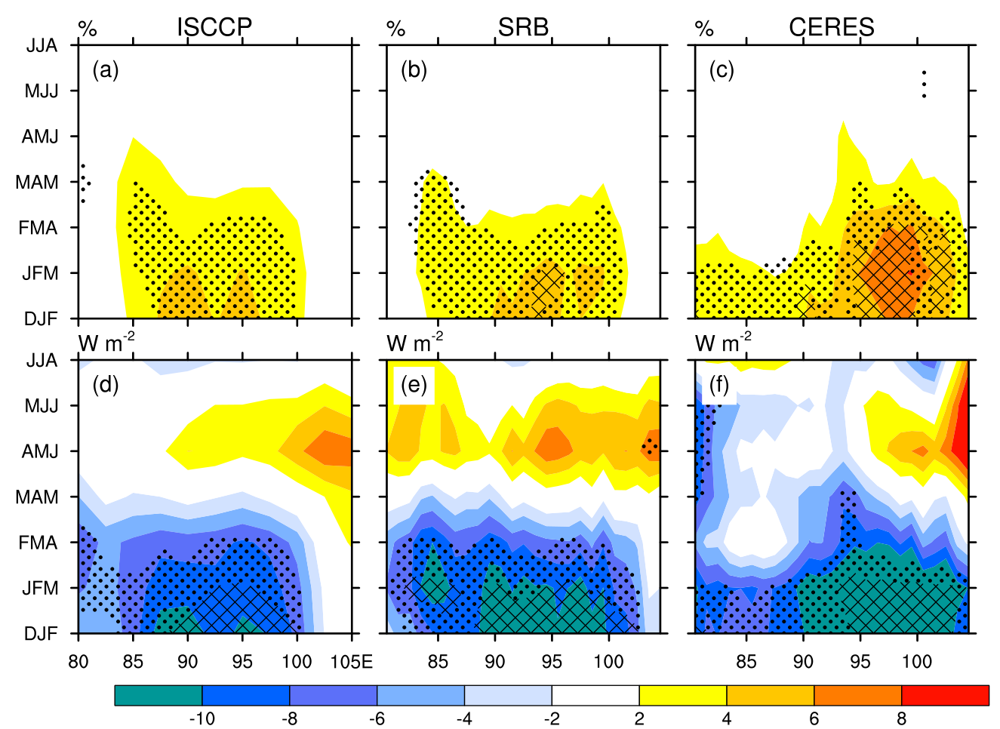
基于28°–38°N平均的冬季NSCD指数，积雪偏多年与偏少年之间(a)–(c)地表反照率（%）和(d)–(f)地表净短波辐射（W m⁻²）的经度—3个月平均差异（从DJF至JJA共7类）；辐射产品分别为：（左）ISCCP、（中）SRB和（右）CERES。
Longitude vs three-month (in seven categories from DJF through JJA) differences in (a)–(c) surface albedo (%) and (d)–(f) surface net shortwave radiation (W m⁻²) between above- and below-normal snow cover years based on the winter NSCD index averaged from 28° to 38°N from radiation products: (left) ISCCP, (center) SRB, and (right) CERES.
积雪偏多年与偏少年之间的地表净太阳辐射差异（由地表向下和向上短波辐射计算）也在晚春消失（Figs. 3d–f），最大差异出现在冬季（数值可达−18 W m⁻²）。
The difference in surface net solar radiation, calculated by surface downward and upward shortwave radiation, between above- and below-normal snow cover years also vanishes in late spring (Figs. 3d–f), and the maximum difference occurs in winter (values up to −18 W m⁻²).
三套卫星数据集的结果高度相似，反照率和辐射异常的演变与积雪异常一致（Fig. 2）；不过，由于春季以后积雪很薄且已老化，前两者比积雪异常略早消失。
The results are highly similar in all three of the satellite datasets, and the evolution of albedo and radiation anomalies is consistent with snow anomalies (Fig. 2), although they disappear slightly earlier than the snow anomalies since the snow cover is very thin and aged after spring.
与积雪偏少年相比，4月以后降水较弱（Fig. 4c）；因此，同期降雪对晚春和初夏积雪异常的贡献很小，积雪异常主要是前一冬季和早春异常持续的结果。
Compared with years of deficient snow cover, precipitation is weaker after April (Fig. 4c); thus, simultaneous snowfall contributes little to snow cover anomalies in late spring and early summer, and snow cover anomalies are largely the result of the persistence from the preceding winter and early spring.
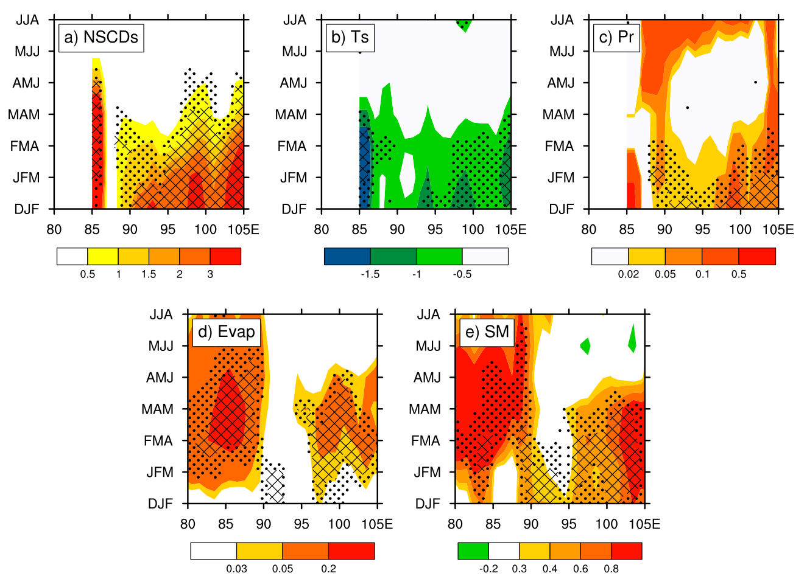
基于冬季NSCD指数，积雪偏多年与偏少年之间(a) NSCD（days）、(b) 地表温度（°C）、(c) 降水（mm day⁻¹）、(d) 蒸散（mm day⁻¹）和(e) 0–10-cm土壤湿度（kg m⁻²）的经度—3个月平均差异（从DJF至JJA共7类）；(a)–(c)采用台站观测资料，(d)和(e)采用GLDAS模式输出资料。
Longitude vs three-month (in seven categories from DJF through JJA) differences in (a) the NSCDs (days), (b) surface tem- perature (°C), (c) precipitation (mm day⁻¹), (d) evapotranspiration (mm day⁻¹), and (e) 0–10-cm soil moisture (kg m⁻²), between above- and below-normal snow cover years, based on the winter NSCD index; values are for station-observed data in (a)–(c) and GLDAS model output data in (d) and (e).
积雪—反照率效应导致当地温度显著下降（Yasunari et al. 1991）。
The snow–albedo effect accounts for the significant decrease in local temperature (Yasunari et al. 1991).
如Fig. 4b所示，积雪较多年份的当地地表温度偏低。
As shown in Fig. 4b, local surface temperatures cool during years with greater snow cover.
然而，当积雪很厚时，积雪对地表的冷却效应可能很弱（Gao et al. 2004）。
However, the cooling effect of snow cover on the surface may be very weak when snow cover is very thick (Gao et al. 2004).
那么，地表温度负异常（Fig. 4b）早于积雪异常（Fig. 2）消失这一事实是否与积雪厚度有关？
So, is the fact that the negative anomaly of surface temperature (Fig. 4b) disappears earlier than snow anomalies (Fig. 2) connected with snow thickness?
通过考察积雪对大气温度垂直廓线的冷却效应来研究这一问题很有必要。
This question is worth examining by investigating the cooling effect of snow cover on the atmospheric vertical temperature profile.
冬季积雪的冷却效应在下对流层最为显著，并随时间推移逐渐减弱（Fig. 5）。
The snow cover cooling effect is most significant in the lower troposphere during winter, and the cooling effect becomes smaller with time (Fig. 5).
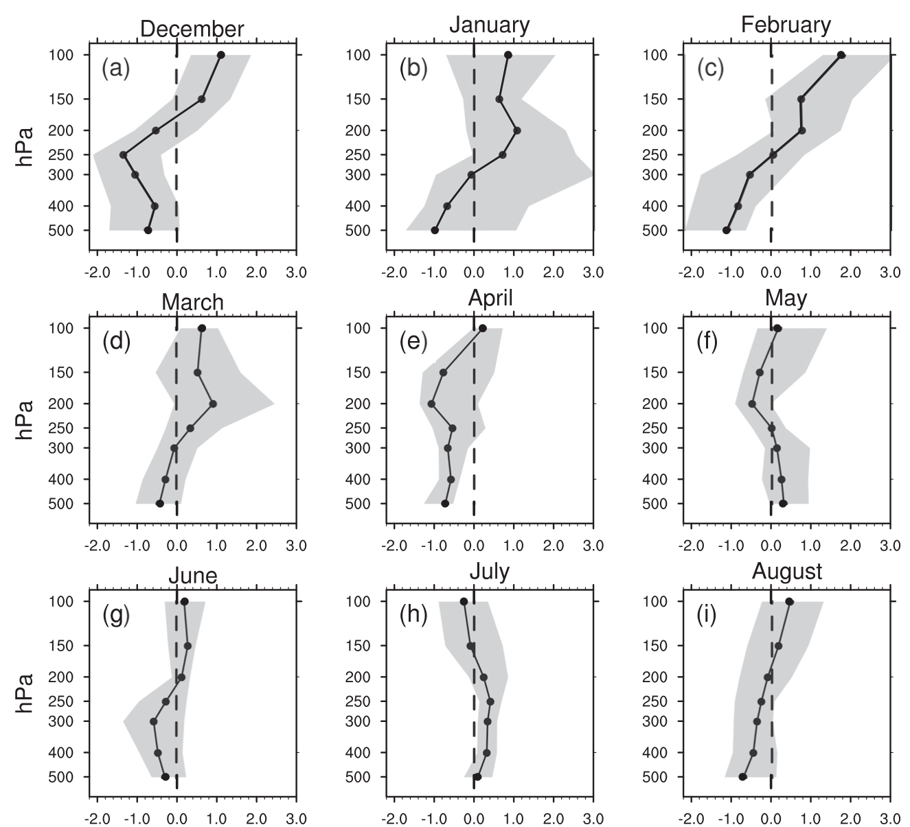
根据冬季NSCD指数，积雪偏多年与偏少年之间逐月垂直温度廓线（°C）的差异［从(a) 12月至(i) 8月］。
Differences in the monthly [from (a) December through (i) August] vertical temperature profiles (°C) between above- and below-normal snow cover years according to the winter NSCD index.
黑色实线表示16个探空站（Fig. 1a，紫色空心圆）的平均值，灰色区域表示这16个探空站的数值范围。
Black solid lines indicate the average values of 16 radiosonde stations (Fig. 1a, purple open circles) and gray areas indicate the range in the values at the 16 radiosonde stations.
4月的对流层温度低于3月，这可能归因于4月快速的融雪过程；此后，到5月时冷却效应几乎无法检测（Fig. 5f）。
The tropospheric temperature is lower in April than in March, which may be attributable to the rapid snowmelt process in April, after which the cooling effect is almost undetectable in May (Fig. 5f).
然而，6月出现温度负异常，随后温度在7月再次升高。
However, negative temperature anomalies occur in June, and then temperatures rise again in July.
最后，8月温度转为负异常（Figs. 5g–i）。
Finally, the temperature turns to a negative anomaly in August (Figs. 5g–i).
因此，5–8月对流层温度异常的不连续性无法用前一冬春季的积雪异常解释，而很可能源于大尺度大气环流的调整。
Thus, the discontinuity in the tropospheric temperature anomaly from May to August cannot be explained by the snow cover anomaly in the preceding winter and spring; rather, it is likely due to the adjustment of large-scale atmospheric circulation.
因此，青藏高原中东部前一冬春季的积雪异常无法影响当地夏季对流层温度。
Therefore, the preceding winter–spring snow cover anomaly in the central and eastern TP cannot influence the in situ summer tropospheric temperature.
b. 雪—水文效应b. Snow–hydrology effect
b. 积雪—水文效应
b. Snow–hydrology effect
Figure 4d表明，在冬季积雪偏多年，青藏高原中东部的夏季蒸散发并未增强。
Figure 4d indicates that summer evapotranspiration over the central and eastern TP is not enhanced during excessive winter snow cover years.
青藏高原中东部大部分地区的土壤湿度异常在晚春减弱（Fig. 4e），这表明该异常仅能在约100°E附近持续到6月。
The soil moisture anomaly is diminished in late spring over most parts of the central and eastern TP (Fig. 4e), indicating that it can only persist until June at approximately 100°E.
在青藏高原中东部，前一冬季积雪异常引起的蒸散发和土壤湿度异常可能都无法充当连接冬季积雪异常与后续东亚夏季风的桥梁，尽管许多先前研究（例如 Barnett et al. 1989; Yasunari et al. 1991; Zhao et al. 2007; Zhu et al. 2009）认为土壤湿度和蒸发可能发挥这种桥梁作用。
Over the central and eastern TP, both evapotranspiration and soil moisture anomalies induced by the preceding winter snow cover anomaly may not act as a bridge linking the winter snow anomaly and the subsequent EASM, although many previous studies (e.g., Barnett et al. 1989; Yasunari et al. 1991; Zhao et al. 2007; Zhu et al. 2009) suggested that soil moisture and evaporation might act as a bridge.
我们的发现与以往结果之间的差异，可能归因于模式性能不佳、试验设计差异以及青藏高原缺乏可靠的观测数据。
The difference between our findings and previous results may be attributable to poor model performance, differences in experimental design, and the lack of credible observation data over the TP.
例如，不同模式中设定的初始积雪量差别很大：Barnett et al.（1989）和Yasunari et al.（1991）分别将欧亚大陆的SWE设为2和5 cm，而Zhu et al.（2009）则将整个青藏高原的初始雪深设为高达20 cm。
For instance, the initial snow cover amounts in the models used are quite distinct; for example, the SWE over the Eurasian continent was set to 2 and 5 cm by Barnett et al. (1989) and Yasunari et al. (1991), respectively, and the initial snow depth was set to as much as 20 cm by Zhu et al. (2009) over the entire TP.
事实上，即使在冬季，青藏高原仍有很大区域没有积雪（Qin et al. 2006; Pu et al. 2007）。
In fact, there is a large area of the TP without snow cover, even in winter (Qin et al. 2006; Pu et al. 2007).
我们最近的研究（Xiao and Duan 2015）发现，若没有新降雪补充，积雪通常在20天后完全融化；在4–6月，青藏高原中东部的地表土壤湿度异常仅能持续20–25天。
Our recent study (Xiao and Duan 2015) found that snow cover usually melts completely after 20 days (without compensation from fresh snowfall), and the surface soil moisture anomaly can only persist for 20–25 days in April–June over the central and eastern TP.
从冬季到夏季，降雪事件逐渐减少；因此，最后一次降雪事件过后的一个月内，积雪—反照率效应和积雪—水文效应便会消失。
Snowfall events decrease from winter to summer; thus, the snow–albedo and snow–hydrology effects vanish within a month following the last snowfall event.
积雪—水文效应的持续时间较短可能与冻土有关，因为青藏高原有相当大一部分地区的下垫面为多年冻土或季节性冻土。
The short persistence of the snow–hydrology effect may be attributable to frozen soil, because a significant portion of the TP is underlain by permafrost or seasonal frozen soil.
冻土会降低土壤入渗能力，融雪则导致地表径流增加，土壤仅吸收少量融雪水（Bayard et al. 2005）。
The frozen soil decreases soil infiltration capacity, and the melting snow results in increased surface runoff and little absorption of the snow meltwater by the soil (Bayard et al. 2005).
春季青藏高原中东部大部分地区被冻土覆盖；青藏高原中部只有少数区域在地下20 cm深处存在冻土层，尤其是在长江和黄河源区附近（Fig. 6a）。
Most parts of the central and eastern TP are covered by frozen soil in spring, and a frozen soil layer to a depth of 20 cm underground occurs in limited areas of the central TP, particularly around the headwaters of the Yangtze and Yellow Rivers (Fig. 6a).
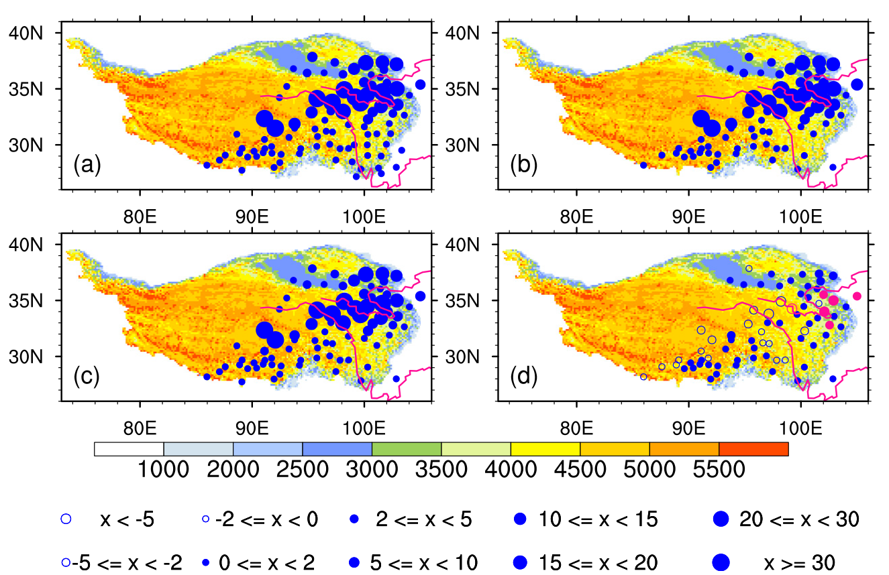
基于台站观测的春季（3–5月）冻土上界深度（大小不同及实心—空心蓝色圆圈，cm）空间分布：(a) 气候态；(b)、(c) 分别为根据冬季NSCD指数得到的积雪偏多年和偏少年的合成；(d) 为(b)与(c)之差，其中红色圆圈表示结果超过90%置信水平。
Spatial distributions of the depth of the upper boundary of frozen soil (different-size and filled–unfilled blue circles, cm) in spring (March–May) based on station observations: (a) climatology; (b),(c) composites of above- and below-normal, respectively, snow cover years according to the winter NSCDs index; and (d) difference between (b) and (c) with red circles indicating results exceeding the 90% confidence level.
彩色阴影表示海拔≥1000 m的地形。
Color shading shows topography ≥1000 m above sea level.
红色曲线从北到南分别表示黄河和长江。
The red curves represent the Yellow River and Yangtze River from north to south, respectively.
积雪偏多年（Fig. 6b）和偏少年（Fig. 6c）的冻土深度空间分布与气候态分布非常相似，而且积雪偏多年与偏少年之间的冻土深度差异很小（Fig. 6d）。
The spatial distributions of frozen soil depth in above-normal (Fig. 6b) and below-normal (Fig. 6c) snow cover years are very similar to the climatological distribution, and the depth of the frozen soil differs little between above-normal and below-normal snow cover years (Fig. 6d).
长江和黄河源区的冻土解冻过程会向土壤中释放水分，但饱和土壤无法吸收任何融雪水或降雨。
The thawing process in the area of the headwaters of the Yangtze and Yellow Rivers will release water into the soil, but saturated soil cannot absorb any snow meltwater or rainfall.
在土壤未饱和的地区，入渗水会被吸收，但吸收量有限。
Where the soil is not saturated, infiltration water will be absorbed, but to a limited extent.
青藏高原中东部其余地区在春季仍处于冻结状态，从而抑制融雪水入渗。
The rest of the central and eastern TP remains frozen in spring and inhibits the infiltration of snow meltwater.
Robock et al.（2003）得到了类似结果，并认为在欧亚大陆中高纬度地区，较晚的融雪期并不会使春季土壤更加湿润。
Robock et al. (2003) found similar results and argued that a later snowmelt period does not lead to wetter soil in spring across the mid- and high latitudes of the Eurasian continent.
Qin et al.（2006）指出，在青藏高原广阔的内陆地区，积雪稀少，或很薄、呈斑块状，且持续时间很短；冬季超过一半的积雪质量通过升华损失。
Qin et al. (2006) indicated that snow cover is rare, or very thin or patchy, and lasts for only a short duration across the vast interior of the TP, and more than half of the snow mass is lost by sublimation in winter.
冬季积雪中只有一小部分转化为融雪水，随后被土壤吸收。
There is only a small part of winter snow that turns to snow meltwater and is then absorbed by the soil.
因此，由于积雪—反照率效应和积雪—水文效应的持续性有限，青藏高原中东部冬季积雪无法对东亚夏季风产生显著影响。
Thus, the winter snow cover over the central and eastern TP cannot have a significant impact on the EASM due to the limited persistence of snow–albedo and snow–hydrology effects.
4. 青藏高原西部和喜马拉雅地区的积雪影响4. Snow cover effects over the western TP and Himalayas
4. 青藏高原西部和喜马拉雅地区的积雪效应
4. Snow cover effects over the western TP and Himalayas
大多数持续积雪区位于青藏高原南缘和西缘的大型山脉中，以及雅鲁藏布江谷地西部（Pu et al. 2007）。
Most of the areas with persistent snow cover are located in the southern and western edges of the TP within large mountain ridges and in the western part of the Yarlung Zangbo Valley (Pu et al. 2007).
Liu et al.（2014a）综合卫星反演SWE信息以及无微波反演SWE像元中的可见积雪百分比，为青藏高原区域（25°–43°N，64°–105°E）定义了积雪面积比例（SCAP）指数；即将SWE超过1 mm且积雪覆盖率超过35%的网格点赋值为1，其他网格点赋值为0。
Based on a synthesis of satellite-derived SWE information and the percentage of visible snow in pixels with no microwave-derived SWE, Liu et al. (2014a) defined the snow cover area proportion (SCAP) index for the TP region (25°–43°N, 64°–105°E); that is, the grid points with SWE over 1mm and snow cover percentage over 35% were assigned the number 1, and other grid points were set to 0.
5月与夏季该指数的年际异常高度相关（相关系数为0.5；95%置信水平；Liu et al. 2014b），因此本文采用5月SCAP指数来识别连接青藏高原积雪与东亚夏季风的潜在机制。
The index is highly correlated (coefficient of 0.5; 95% confidence level) in terms of interannual anomalies between May and summer (Liu et al. 2014b), and thus the SCAP index in May is employed here to identify potential mechanisms relating TP snow cover to the EASM.
视热源Q₁（Yanai et al. 1973）按下式计算：Q₁ = Cₚ(p/p₀)^κ(∂θ/∂t + V · ∇θ + ω∂θ/∂p)。
The apparent heat source Q₁ (Yanai et al. 1973) is calculated as: Q₁ = Cₚ(p/p₀)^κ(∂θ/∂t + V · ∇θ + ω∂θ/∂p).
其中，θ为位温，ω为垂直p速度，V为水平速度，p₀为地表气压，p为气压。
where θ is the potential temperature, ω is the vertical p velocity, V is the horizontal velocity, p₀ is the surface pressure, and p is the pressure.
在方程κ = R/Cₚ中，R和Cₚ分别为干空气的气体常数和定压比热。
In the equation κ = R/Cₚ, R and Cₚ are the gas constant and specific heat of dry air at constant pressure, respectively.
将该方程从地面积分至100 hPa，即可得到气柱视热源。
Integrating the equation from the surface to 100 hPa, we obtain the air column apparent heat source.
冬季NSCD、夏季Q₁和SCAP指数的年际变化见Fig. 7。
The interannual variations in winter NSCDs, summer Q₁, and the SCAP index, are shown in Fig. 7.
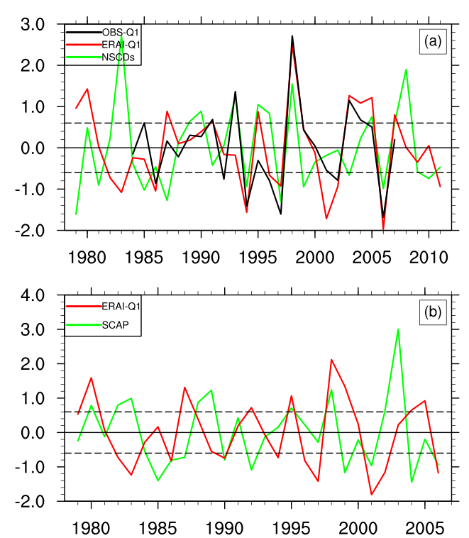
TP大气视热源以及NSCD和SCAP指数的标准化年际时间序列：(a) TP中部和东部的冬季NSCD指数（绿线）、夏季ERA-Interim Q₁（红线）和夏季大气热源—热汇（黑线）（采用双线性插值将ERA-Interim Q₁插值至92个台站）；(b) TP西部和喜马拉雅山脉5月SCAP指数（绿线）及夏季Q₁（红线），后者由海拔>3000 m的格点平均得到。
The standardized interannual time series of the atmo- spheric apparent heat source and NSCD and SCAP indices across the TP: (a) NSCD index in winter (green line), summer ERA-Interim Q₁ (red line), and summer atmospheric heat source–sink (black line) over the central and eastern TP (ERA-Interim Q₁ interpolated to the 92 stations by bilinear interpolation); and (b) SCAP index over the western TP and Himalayas (green line) in May and the summer Q₁ (red line), averaged from the grid points with altitude >3000 m.
虚线表示±0.6个标准差。
Dashed lines indicate ±0.6 standard deviations.
在Fig. 7a中，所有变量均在青藏高原中东部（Fig. 1a，红色矩形）进行平均；在年际时间尺度上，夏季ERA-Interim Q₁与大气热源—热汇（Duan and Wu 2008）具有良好关系（相关系数为0.83；在99%置信水平上显著）。
In Fig. 7a, all of the variables are averaged for the central and eastern TP (Fig. 1a, red rectangle), and the summer ERA-Interim Q₁ exhibits a good relationship with the atmospheric heat source–sink (Duan and Wu 2008) at the interannual time scale (correlation coefficient of 0.83; significant at the 99% confidence level).
然而，冬季NSCD与夏季Q₁之间的关系较弱（0.19），表明青藏高原中东部冬季积雪无法显著改变夏季大气热源。
However, a weak relationship is found between winter NSCDs and summer Q₁ (0.19), indicating that winter snow cover over the central and eastern TP cannot significantly alter the summer heat source.
对于青藏高原西部和喜马拉雅地区5月的积雪（Fig. 7b），尽管其可持续至夏季，但与夏季Q₁的滞后相关很低（仅0.08）。
In terms of the snow cover over the western TP and the Himalayas (Fig. 7b) in May, snow cover displays a low lagged correlation with summer Q₁ (only 0.08), although it can persist into summer.
因此，前期积雪无法显著调节青藏高原中东部或整个青藏高原随后夏季的大气热源。
Therefore, the preceding snow cover cannot significantly modulate the subsequent summer atmospheric heat source of the central and eastern TP, or the entire TP.
青藏高原冬春季积雪无法通过改变高原夏季大气热源来影响东亚夏季风的年际变率。
The winter–spring snow cover over the TP cannot influence the interannual variability of the EASM by altering the summer atmospheric heat source over the TP.
将标准化SCAP指数（Fig. 7b，绿线）大于0.6的年份定义为积雪偏多年，小于−0.6的年份定义为积雪偏少年。
Standardized SCAP index (Fig. 7b, green line) values greater than 0.6 are defined as above-normal snow cover years, and those smaller than −0.6 as below-normal years.
两类各包含9个样本；即青藏高原西部和喜马拉雅地区在9年（1980、1982、1983、1988、1989、1995、1998、2002和2003年）积雪偏多，另外9年（1985、1986、1987、1990、1992、1999、2001、2004和2006年）为积雪偏少年。
Each category contains nine samples; that is, the western TP and the Himalayas feature above-normal snow cover in nine years (1980, 1982, 1983, 1988, 1989, 1995, 1998, 2002, and 2003), and the other nine years (1985, 1986, 1987, 1990, 1992, 1999, 2001, 2004, and 2006) are below-normal snow cover years.
Figure 8a给出了5月青藏高原SWE的气候态分布，可以看出积雪主要覆盖青藏高原西部，并沿喜马拉雅山脉向东延伸。
Figure 8a shows the climatological distribution of SWE over the TP in May, and we can see that snow mainly covers the western TP and stretches eastward along the Himalayas.
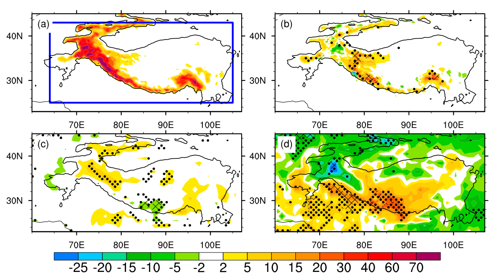
彩色阴影表示(a) 5月SWE（mm）的气候态空间分布，以及根据5月SCAP指数（Fig. 7b，绿线）得到的TP积雪偏多年与偏少年之间(b) NSIDC SWE（mm）、(c) SRB地表反照率（%）和(d) SRB地表净短波辐射（W m⁻²）的差异。
Color shading showing the climatological spatial distribution of (a) SWE (mm) in May and the difference in (b) SWE (mm) obtained from NSIDC, (c) surface albedo (%), and (d) surface net shortwave radiation (W m⁻²) derived from SRB between above- and below-normal TP snow cover years, according to the SCAP index for May (Fig. 7b, green line).
(a)中的蓝色方框表示定义SCAP指数所用区域（25°–43°N, 64°–105°E），所有面板中的黑色曲线勾勒出平均海拔>2000 m的TP区域。
The blue box in (a) indicates the domain used to define the SCAP index (25°–43°N, 64°–105°E), and the black curve in all panels outlines the TP area with an averaged altitude >2000 m.
根据上述异常年份，整个青藏高原的积雪均偏多（Fig. 8b），并有两个正异常中心：约80°E的青藏高原西部和约95°E的青藏高原东南部。
According to the anomaly years mentioned above, snow cover is above normal across the TP (Fig. 8b), and there are two positive anomaly centers: the western TP at approximately 80°E and the southeastern TP at approximately 95°E.
这些积雪异常中心在夏季仍很明显（Fig. 14d），表明这些地区具有很强的持续性，这一点此前已由Liu et al.（2014b）指出。
The snow cover anomaly centers are still apparent in summer (Fig. 14d), demonstrating strong persistence in these places, as noted previously by Liu et al. (2014b).
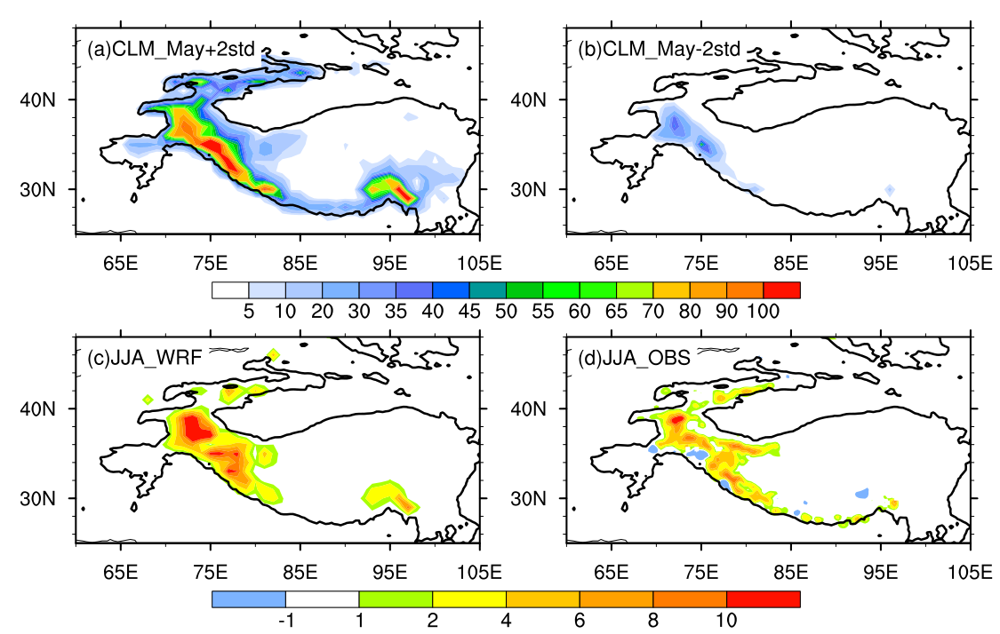
彩色阴影表示TP上SWE（mm）的分布：(a) 5月ANexp；(b) 5月BNexp；(c) ANexp与BNexp之间夏季SWE的差异；(d) 根据5月SCAP指数得到的TP积雪偏多年与偏少年之间夏季NSIDC SWE的差异。
Color shading showing the distributions of SWE (mm) over the TP: (a) ANexp in May; (b) BNexp in May; (c) difference in summer SWE between ANexp and BNexp; and (d) and the difference in summer NSIDC SWE between above- and below-normal TP snow cover years, according to the May SCAP index.
黑色曲线勾勒出平均海拔>2000 m的TP区域。
The black curve outlines the TP area with an average altitude >2000 m.
尽管夏季青藏高原西部和喜马拉雅地区仍有积雪，但由于积雪逐渐老化、变薄，地表反照率会降低。
Although snow cover still exists over the western TP and the Himalayas in summer, surface albedo decreases because snow is getting old and thinning.
因此，地表反照率差异很小（Fig. 8c），积雪—反照率效应对地表净太阳辐射的削弱作用也很弱（Fig. 8d）。
Thus, the difference in surface albedo is small (Fig. 8c), and the snow–albedo effect plays only a weak role in weakening surface net solar radiation (Fig. 8d).
在积雪偏多年，青藏高原西部的地表净太阳辐射（Fig. 8d）比积雪偏少年约低25 W m⁻²；约86°E处的正异常可能归因于反照率负异常（Fig. 8c）。
In above-normal snow cover years, surface net solar radiation (Fig. 8d) is approximately 25 W m⁻² less than that in below-normal years over the western TP, and the positive anomaly at approximately 86°E may be attributable to the negative albedo anomaly (Fig. 8c).
尽管积雪偏多，青藏高原大部分地区仍表现为地表净太阳辐射正异常。
Most parts of the TP show positive surface net solar radiation anomalies, even though snow cover is above normal.
由于夏季反照率异常较弱，积雪—反照率效应对降低地表净辐射的贡献很小；因此，青藏高原积雪与夏季大气热源关系较弱也就不足为奇（Fig. 7b）。
Because of the weak albedo anomaly in summer, the snow–albedo effect contributes little to reduce surface net radiation; thus, it is not unusual that snow cover over the TP is weakly related to the summer atmospheric heat source (Fig. 7b).
这并不出乎意料，因为TP夏季大气热源除受地表状况影响外，还受到北大西洋涛动（NAO; Liu and Duan 2012）和印度洋海盆模态（Hu and Duan 2015）等其他因素的影响。
This is not unexpected because the TP summer atmospheric heat source is influenced by surface conditions as well as other factors, such as the North Atlantic Oscillation (NAO; Liu and Duan 2012) and Indian Ocean basin mode (Hu and Duan 2015).
然而，去除ENSO信号后，TP的SCAP与长江和黄河流域夏季降水之间仍存在良好关系（Fig. 9a，蓝色矩形），这与以往研究的结果一致（Zhang and Tao 2001; Y. S. Zhang et al. 2004; Souma and Wang 2010; Liu et al. 2014a,b）；而且，Fig. 9所示东亚降水的空间型与东亚夏季降水的第一主导模态相似（Wang et al. 2008）。
However, after removing the ENSO signal, a good relationship remains between TP SCAP and summer rainfall over the Yangtze and Yellow River basins (Fig. 9a, blue rectangle), as documented in previous studies (Zhang and Tao 2001; Y. S. Zhang et al. 2004; Souma and Wang 2010; Liu et al. 2014a,b), and the spatial pattern of the precipitation over East Asia shown in Fig. 9 is similar to the first leading mode of the summer precipitation in East Asia (Wang et al. 2008).
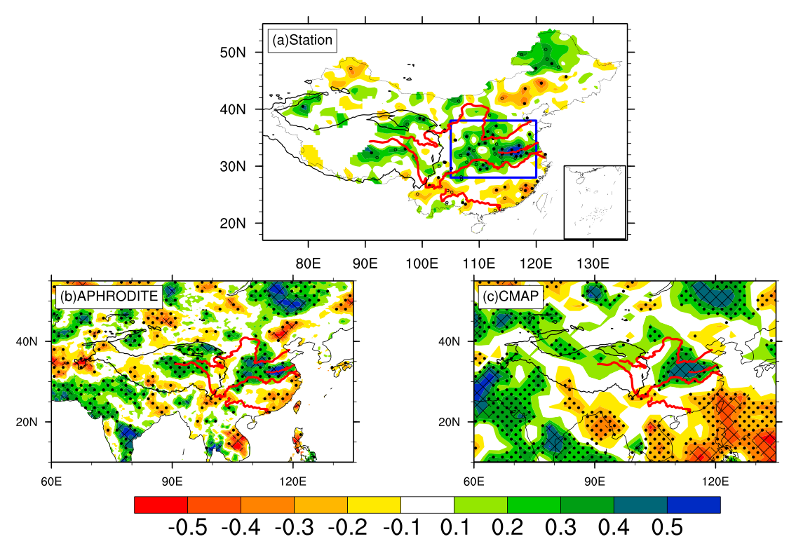
彩色阴影表示1979–2006年5月SCAP指数与夏季降水之间的相关系数：(a) 台站观测资料，(b) APHRODITE，以及(c) CMAP。
Color shading showing the correlation coefficients between the May SCAP index and summer pre- cipitation for the period 1979–2006 for (a) station-observed data, (b) APHRODITE, and (c) CMAP.
所有变量均已去除ENSO信号。
The ENSO signals have been removed from all of the variables.
(a)中的蓝色矩形表示长江和黄河流域（28°–38°N, 105°–120°E）。
The blue rectangle in (a) denotes the Yangtze and Yellow River basins (28°–38°N, 105°–120°E).
在(a)中，小空心（实心）圆表示达到90%（95%）置信水平；在(b)和(c)中，点状和交叉阴影的含义与Fig. 2相同。
In (a), the small open (solid) circles indicate statistical significance at the 90% (95%) confidence level; and in (b) and (c), the dots and cross-hatching are as in Fig. 2.
红色曲线从北到南分别表示黄河、淮河、长江和珠江。
The red curves represent, from north to south, the Yellow, Huaihe, Yangtze, and Zhujiang Rivers.
黑色曲线勾勒出平均海拔>3000 m的TP区域。
The black curve outlines the TP area with an average altitude >3000 m.
如Fig. 10所示，根据Student’s t检验，SCAP与长江和黄河流域夏季降水之间的相关系数为0.56，置信水平为99%。
As shown in Fig. 10, the correlation coefficients between SCAP and the summer precipitation over the Yangtze and Yellow River basins is 0.56, with a confidence level of 99%, according to the Student’s t test.
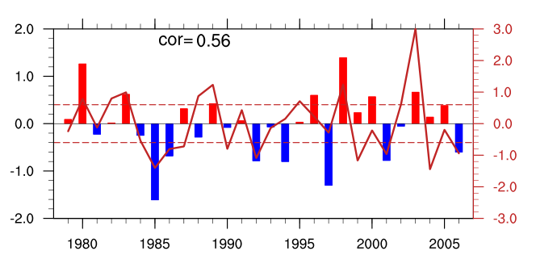
基于台站观测降水和标准化5月SCAP指数（棕线），长江和黄河流域（28°–38°N, 105°–120°E）夏季降水异常（柱状，mm day⁻¹）的时间序列。
Time series of the summer precipitation anomaly (bars, mm day⁻¹) over the Yangtze and Yellow River basins (28°–38°N, 105°–120°E), based on station-observed precipitation and stan- dardized May SCAP index (brown line).
虚线表示SCAP指数的±0.6个标准差。
Dashed lines represent ±0.6 standard deviations of the SCAP index.
TP西部和喜马拉雅山脉春季积雪偏多通常对应长江和黄河流域夏季降水丰沛，仅有两年（1988年和2002年）例外；积雪偏少之后通常为干旱夏季，仅有一年（1987年）的降水略高于常年。
Excessive spring snow cover over the western TP and the Himalayas typically corresponds to abundant summer precipitation over the Yangtze and Yellow River basins, except during two years (1988 and 2002), and deficient snow cover is usually followed by a dry summer, with only one year (1987) featuring slightly above-normal precipitation.
尽管本文发现SCAP指数与长江和黄河流域夏季降水之间存在稳健关系，但不匹配样本的存在支持这样一种观点：EASM降水的年际变率非常复杂（Wang et al. 2008），无法由单一因素完全解释。
The existence of mismatched samples supports the idea that the interannual variability of EASM rainfall is highly complicated (Wang et al. 2008) and cannot be fully explained by one factor, despite the robust relationship between SCAP index and the summer precipitation over the Yangtze and Yellow River basins found here.
ENSO（Wang et al. 2000）、ENSO与NAO的共同作用（Z. Wu et al. 2009; Wu et al. 2012a）、印度洋海盆模态（Yang et al. 2007）、北极涛动（Gong et al. 2011）和北极海冰（B. Wu et al. 2009）等其他因素也可能发挥重要作用。
Other factors such as ENSO (Wang et al. 2000), ENSO and NAO combined (Z. Wu et al. 2009; Wu et al. 2012a), the Indian Ocean basin mode (Yang et al. 2007), the Arctic Oscillation (Gong et al. 2011), and Arctic sea ice (B. Wu et al. 2009) may also play important roles.
值得注意的是，1987年和1988年均为ENSO年，而欧亚大陆中高纬度地区的春季地表感热通量可能对1987年和2002年中国东部的夏季降水产生了影响（Wu et al. 2015）。
It is worth noting that 1987 and 1988 were ENSO years, and the spring surface sensible heat flux over the mid-to-high latitudes of the Eurasian continent may have had an influence on the summer precipitation over eastern China in 1987 and 2002 (Wu et al. 2015).
积雪与EASM之间的联系可能基于两个物理过程。
The link between snow cover and the EASM is likely based on two physical processes.
其一是积雪—反照率效应，但如上所述，夏季的反照率效应较弱。
One is the snow–albedo effect, but the albedo effect is weak in summer, as discussed above.
因此，前期积雪能够显著影响EASM的途径仅有一种，即积雪—水文效应。
Thus, there is only one way that the preceding snow cover could noticeably influence the EASM: the snow–hydrology effect.
去除ENSO信号后，夏季蒸散对SCAP指数的回归（Fig. 11a）表明，长江和黄河流域的地表蒸散减少；因此，长江与黄河之间的降水偏多并非源于局地蒸散。
After removal of the ENSO signal, the regression of summer evapotranspiration against the SCAP index (Fig. 11a) demonstrates that surface evapotranspiration is reduced in the drainage area of the Yangtze and Yellow Rivers; thus, above-normal precipitation between the Yangtze and Yellow Rivers does not result from local evapotranspiration.
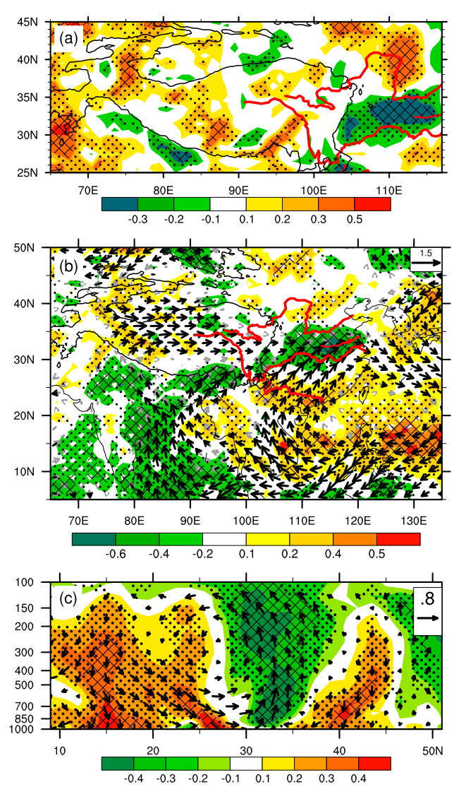
1979–2006年：(a) 夏季蒸散对5月SCAP指数的回归系数（蒸散取自GLDAS；彩色阴影，mm day⁻¹）；(b) 从地表垂直积分至300 hPa的水汽通量（矢量，kg m⁻¹ s⁻¹）和水汽通量散度（彩色阴影，10⁻⁵ kg m⁻² s⁻¹）；(c) 110°–120°E平均的气压—纬度剖面，其中矢量由经向速度（m s⁻¹）和垂直速度（彩色阴影，10⁻² Pa s⁻¹）组成。
(a) Regression coefficients of summer evapotranspira- tion (obtained from GLDAS, color shading, mm day⁻¹) regressed against the May SCAP index, (b) vertically integrated (surface to 300 hPa) water vapor flux (vectors, kg m⁻¹ s⁻¹) and water vapor flux divergence (color shading, 10⁻⁵ kg m⁻² s⁻¹), and (c) the pressure–latitude cross section for vectors composed of meridional velocity (m s⁻¹) and vertical velocity (color shading, 10⁻² Pa s⁻¹) averaged from 110° to 120°E for the period 1979–2006.
所有变量均已去除ENSO信号。
The ENSO signals have been removed from all of the variables.
根据Student’s t检验，黑色矢量超过95%置信水平。
Black vectors exceed the 95% confidence level based on a Student’s t test.
红色曲线从北到南分别表示黄河、淮河、长江和珠江。
The red curves represent, from north to south, the Yellow, Huaihe, Yangtze, and Zhujiang Rivers.
然而，TP上的蒸散增强，且蒸散增强区与积雪异常中心相对应（Fig. 8b）；这种增强本身源于夏季融雪径流或融雪水下渗至土壤，从而有利于蒸发增强（Barnett et al. 1989; Yasunari et al. 1991; Y. S. Zhang et al. 2004）。
However, evapotranspiration is enhanced over the TP, and the enhanced evapotranspiration area corresponds to the snow cover anomaly centers (Fig. 8b), which themselves result from snowmelt runoff or snow meltwater infiltrating into soil in summer, benefitting the enhancement of evaporation (Barnett et al. 1989; Yasunari et al. 1991; Y. S. Zhang et al. 2004).
尽管增强的蒸散向大气输送了更多水汽，局地降水却未增加（Fig. 9）；因此，源自TP西部和南部的充沛水汽可由TP中低对流层的西风向东输送（Fig. 11b）。
While the enhanced evapotranspiration delivers more water vapor to the atmosphere, local rainfall does not increase (Fig. 9); thus, abundant water vapor originating from the western and southern TP can be conveyed eastward (Fig. 11b) by the westerly winds in the mid- and lower troposphere over the TP.
此外，还有另外两个水汽源。
In addition, there are two other vapor sources.
一支源自孟加拉湾，由西南风输送至中国东部；另一支则在夏季增强的西北太平洋副热带高压作用下到达该地区。
One derives from the Bay of Bengal and is conveyed to eastern China by southwest winds, and the other arrives there by the enhanced summer northwest Pacific subtropical high.
Liu et al. (2014a)解释称，TP西部积雪偏多会使副热带高压增强。
Liu et al. (2014a) explained that the subtropical high enhances due to excessive snow cover over the western TP.
TP西部积雪偏多有利于当地出现下沉运动，并通过经向环流与北印度洋的上升运动相联系，从而造成更多降水（Fig. 9），并在热带海洋上强迫出伴有东风异常（Fig. 11b）的Kelvin波响应。
The excessive snow cover over the western TP is conducive to in situ downward motion and is connected with the upward motion over the north Indian Ocean through meridional circulation, which results in more precipitation (Fig. 9) and forces a Kelvin wave response with easterly wind anomalies (Fig. 11b) over the tropical oceans.
最终，西北太平洋夏季降水减少，西北太平洋副热带高压增强（Xie et al. 2009）。
Ultimately, summer precipitation is reduced over the northwestern Pacific and the northwest Pacific subtropical high is enhanced (Xie et al. 2009).
就平均气候态而言，夏季从地表积分至300 hPa、输送到长江和黄河流域（Fig. 12a，蓝色矩形）的总净水汽通量约为466 kg m⁻¹ s⁻¹。
In terms of mean climate, the net total water vapor flux, integrated from the surface to 300 hPa, transported to the Yangtze and Yellow River basins (Fig. 12a, blue rectangles), is approximately 466 kg m⁻¹ s⁻¹ in summer.
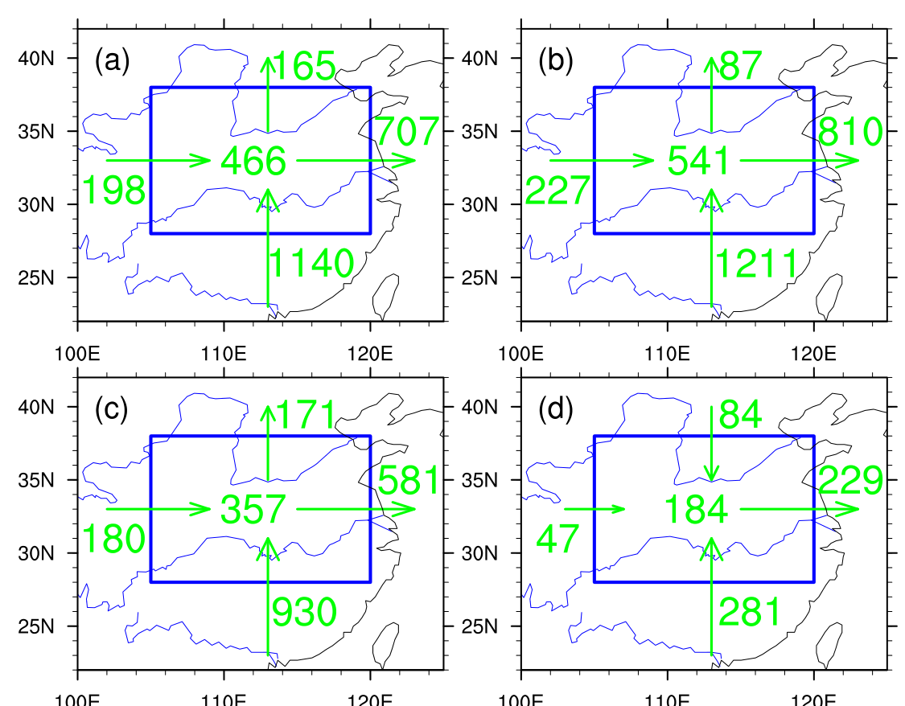
基于ERA-Interim资料，从地表垂直积分至300 hPa、通过长江和黄河流域各边界（蓝色矩形；28°–38°N, 105°–120°E）的夏季水汽通量值（kg m⁻¹ s⁻¹；绿色箭头表示水汽通量方向）：(a) 气候态；(b) 基于5月SCAP指数得到的积雪偏多年合成；(c) 同(b)，但为积雪偏少年；(d) (b)与(c)之差。
Vertically integrated summer water vapor flux values (kg m⁻¹ s⁻¹) from the surface to 300 hPa through each boundary of the Yangtze and Yellow River basins (blue rectangle; 28°–38°N, 105°–120°E), based on ERA- Interim data (green arrows indicate the direction of water vapor flux): (a) climatology; (b) composite of the above- normal snow cover years based on the May SCAP index; (c) as in (b), but for the below-normal snow cover years; and (d) the difference between (b) and (c).
蓝色曲线从北到南分别表示黄河、长江和珠江。
The blue curves represent, from north to south, the Yellow, Yangtze, and Zhujiang Rivers.
盛行南风提供了大量水汽，此外还有另一支水汽源从TP下游区域的西边界（105°E，包括TP和孟加拉湾的水汽供应）进入。
The prevailing southerly wind provides a large amount of the water vapor, alongside another vapor source coming from the western boundary (105°E, including the TP and the Bay of Bengal water vapor supply), downstream of the TP.
一部分水汽向东和向北输送，但在积雪偏多年（Fig. 12b），通过北边界（38°N）向北输送的水汽显著减少。
A portion of the vapor is transported eastward and northward, but during excessive snow cover years (Fig. 12b) the northward vapor transport through the northern boundary (38°N) decreases remarkably.
通过其余边界的水汽输送增强，这有利于中国东部出现降水偏多，如Fig. 9所示。
Water vapor transport through the remaining boundaries is enhanced, which is conducive to above-normal precipitation over eastern China, as shown in Fig. 9.
积雪偏少年则出现相反情形（Fig. 12c），长江和黄河流域的降水受到抑制。
The opposite situation occurs during years of deficient snow cover (Fig. 12c), with precipitation suppressed over the Yangtze and Yellow River basins.
Figure 12d表明，在积雪偏多年，净输入水汽通量比积雪偏少年大184 kg m⁻¹ s⁻¹。
Figure 12d shows that, in above-normal snow cover years, net incoming water vapor is 184 kg m⁻¹ s⁻¹ larger than that during deficient snow cover years.
这种水汽净输入主要可归因于南风异常（Fig. 11b），部分则来自TP和孟加拉湾水汽的向东输送。
The net water vapor can be mainly ascribed to the southerly anomalies (Fig. 11b), and partly to the vapor transportation eastward from the TP and the Bay of Bengal.
尽管通过北边界向长江和黄河流域输送的水汽呈正异常，但这并不意味着有更多水汽来自中国北方，因为如Fig. 12b所示，水汽仍继续通过北边界向北输送。
While there is a positive anomaly of water vapor transport to the Yangtze and Yellow River basins through the northern boundary, this does not mean that more water vapor is coming from northern China, because water vapor continues to be transported northward through the northern boundary, as shown in Fig. 12b.
与积雪偏少年相比，只是向北的水汽输送有所减少。
Northward water vapor transport simply decreases compared with years of deficient snow cover.
源自TP的低层涡旋向东传播，对激发中国东部强降雨发挥着极其重要的作用（Tao and Ding 1981; Yasunari and Miwa 2006）。
The eastward propagation of the low-level vortices that originate over the TP plays a highly significant role in stimulating heavy rainfall over eastern China (Tao and Ding 1981; Yasunari and Miwa 2006).
28°–38°N范围内500 hPa涡度的平均时间—经度剖面（Fig. 13a）表明，频繁出现的正涡度异常向东传播至长江和黄河流域，且大多数正涡度异常生成于TP西部，与TP西部的积雪异常中心相对应（Fig. 8b）。
The average time–longitude cross section of vorticity at 500 hPa from 28° to 38°N (Fig. 13a) shows that frequent positive vorticity anomalies propagate eastward to the Yangtze and Yellow River basins, and most of the positive vorticity anomalies are generated over the western TP, which corresponds to the western TP snow cover anomaly center (Fig. 8b).
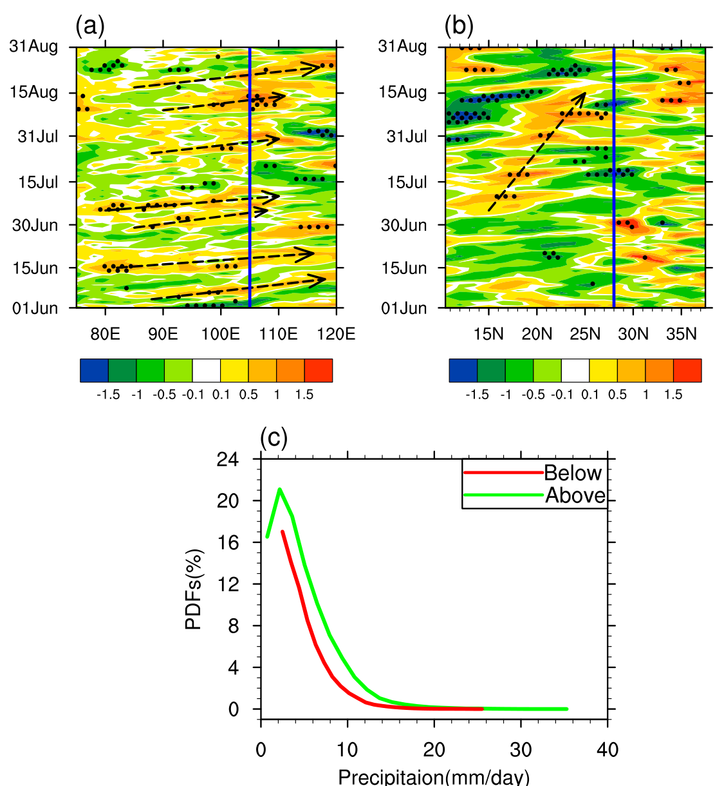
SCAP积雪偏多年与偏少年之间夏季500-hPa涡度（彩色阴影，10⁻⁵ s⁻¹）的差异：(a) 涡度在28°–38°N范围内平均，蓝线表示105°E；(b) 涡度在105°–120°E范围内平均，蓝线表示28°N。
Differences in summer 500-hPa vorticity (color shading, 10⁻⁵ s⁻¹) between above- and below-normal SCAP years for the vorticity averaged in (a) from 28° to 38°N with the blue line indicating 105°E, and (b) from 105° to 120°E with the blue line indicating 28°N.
箭头表示正涡度的输送方向。
The arrows indicate the transportation direction of positive vorticity.
(c) 积雪偏多（绿色）和偏少（红色）年份长江和黄河流域（28°–38°N, 105°–120°E）夏季逐日降水的概率分布函数。
(c) The probability distribution functions of daily summer precipitation over the Yangtze and Yellow River basins (28°–38°N, 105°–120°E) for above- (green) and below-normal (red) snow cover years.
尽管大部分水汽沿南边界输送至长江和黄河流域，但正涡度异常并不穿过南边界传播（即南风异常不利于天气尺度扰动向北传播；Fig. 13b）。
Although most of the water vapor is transported to the Yangtze and Yellow River basins along the southern boundary, the positive vorticity anomalies do not propagate through the southern boundary (i.e., the southerly anomaly does not favor the propagation of synoptic disturbances northward; Fig. 13b).
尽管TP西部和喜马拉雅山脉的积雪仅为长江和黄河流域夏季降水异常贡献少量水汽，但在TP上生成并向东传播的天气尺度扰动可能是中国东部夏季降水的重要触发因素。
While the snow cover of the western TP and the Himalayas only contributes a small part of the water vapor to the summer precipitation anomaly over the Yangtze and Yellow River basins, the eastward-propagating synoptic disturbances generated over the TP may be an important trigger for summer precipitation over eastern China.
如Fig. 11a所示，TP地表蒸散显著增强，而频繁的天气尺度扰动似乎可归因于蒸发—对流反馈机制（Yasunari et al. 1991; Y. S. Zhang et al. 2004）。
As shown in Fig. 11a, surface evapotranspiration is markedly enhanced over the TP, and the frequent synoptic disturbances seem to be attributable to an evaporation–convection feedback mechanism (Yasunari et al. 1991; Y. S. Zhang et al. 2004).
向东传播的天气尺度扰动和低层辐合加强了长江和黄河流域的上升运动（Fig. 11c）。
The eastward-propagating synoptic disturbances and low-level convergence intensify the upward motion over the Yangtze and Yellow River basins (Fig. 11c).
长江和黄河流域日降水的概率分布函数显示，与积雪偏少年相比，积雪偏多年中小雨（<10 mm day⁻¹）和中雨（10–18 mm day⁻¹）事件更多。
The probability distribution functions of daily precipitation over the Yangtze and Yellow River basins reveal that there are more light rain (<10 mm day⁻¹) and moderate rain (10–18 mm day⁻¹) events during excessive snow cover years than in deficient snow cover years.
强降雨（25–50 mm day⁻¹）事件也有所增多，而积雪偏少年并未出现这种情况（Fig. 13c）。
Heavy rain (25–50 mm day⁻¹) also enhances, which does not occur during deficient snow cover years (Fig. 13c).
我们的发现与Wang et al. (2014a)的结果相似。
Our findings are similar to those of Wang et al. (2014a).
TP西部和喜马拉雅山脉的积雪通过调节大尺度大气环流而影响EASM，这有利于水汽供应；区域性增强的蒸散则有利于天气尺度扰动数量增加。
Snow cover over the western TP and the Himalayas affects the EASM by modulating large-scale atmosphere circulation, which is beneficial to the water vapor supply, and the regionally enhanced evapotranspiration favors an increased number of synoptic disturbances.
最终，水汽辐合以及来自TP、向东传播的天气尺度扰动共同促使长江和黄河流域形成辐合。
Ultimately, convergence forms over the Yangtze and Yellow River basins, induced by water vapor convergence and the eastward-propagating synoptic disturbances from the TP.
5. 模式模拟5. Model simulation
5. 模式模拟
5. Model simulation
为验证资料分析所得结论，本文采用Weather Research and Forecasting（WRF）Model 3.6版（http://www2.mmm.ucar.edu/wrf/users/docs/user_guide_V3/ARWUsersGuideV3.pdf）。
To confirm the conclusions obtained from data analyses, the Weather Research and Forecasting (WRF) Model version 3.6 (http://www2.mmm.ucar.edu/wrf/users/docs/user_guide_V3/ARWUsersGuideV3.pdf) is employed here.
WRF对EASM具有良好的模拟能力（Wang et al. 2014b）。
WRF has a good performance on the simulation of EASM (Wang et al. 2014b).
该模式由5月TP区域的积雪异常强迫驱动。
It is forced by snow cover anomalies over the TP area in May.
WRF 3.6版采用的物理参数化方案包括WSM-6微物理方案、RRTM长波方案、Dudhia短波方案、Noah陆面模式、BouLac行星边界层方案和Grell–Devenyi对流方案。
The physical packages employed in WRF version 3.6 include the WSM-6 microphysics scheme, the RRTM longwave scheme, the Dudhia shortwave scheme, the Noah land surface model, the BouLac planetary boundary layer scheme, and the Grell–Devenyi convective scheme.
模拟区域见补充材料中的Fig. S1。
The simulation domain is shown in Fig. S1 in the supplementary material.
WRF Model由气候态（1981–2010）初始条件和侧边界条件驱动，其中包括6小时一次的ERA-Interim资料和逐日最优插值海表温度（OISST）资料（Reynolds et al. 2007）。
The WRF Model is driven by climatological (1981–2010) initial and lateral boundary conditions, including 6-hourly ERA-Interim and daily Optimum Interpolated Sea Surface Temperature (OISST) data (Reynolds et al. 2007).
模式的水平分辨率为45 km（本研究未使用嵌套网格），并设有从地表延伸至50 hPa的38个地形跟随垂直sigma层。
The model has a 45-km horizontal resolution (without nested grids in this study) and 38 terrain-following vertical sigma levels spanning from the surface to 50 hPa.
进行了三组集合试验，即控制试验、积雪偏多试验（ANexp）和积雪偏少试验（BNexp）。
Three ensemble experiments are performed; namely, a control experiment, an above-normal snow experiment (ANexp), and a below-normal snow experiment (BNexp).
每组集合试验包含6个采用不同初始条件的成员，均从5月1日0000 UTC开始，每次模拟于8月31日1800 UTC结束。
Each of the ensemble experiments contains six members with different initial conditions starting from 0000 UTC 1 May, and each simulation ends at 1800 UTC 31 August.
我们发现，WRF Model能够较好地再现200 hPa南亚高压和500 hPa西太平洋副热带高压，但850 hPa南风偏强，且中国东部降水偏多（补充材料中的Fig. S2）。
We find that the WRF Model reproduces the South Asian high at 200 hPa and western Pacific subtropical high at 500 hPa well, apart from stronger southerlies at 850 hPa and heavier precipitation over eastern China (Fig. S2 in the supplementary material).
基于NSIDC卫星观测SWE，以5月气候态SWE加上2倍标准差得到ANexp的强迫场，而以气候态SWE减去2倍标准差得到BNexp的强迫场，如Figs. 14a和14b所示。
Based on NSIDC satellite-observed SWE, the climatological SWE in May plus twice the standard deviation obtains the forcing field for ANexp, whereas the forcing field for BNexp is obtained by means of minus twice the standard deviation from the climatological SWE, as shown in Figs. 14a and 14b.
这些图中的SWE分布被认为是合理的，因为它们与1981年和2004年5月实际出现的SWE非常相似（图略）。
The distributions of SWE in these figures are deemed reasonable because they are very similar to the SWE found to have occurred in May 1981 and 2004 (figure omitted).
5月期间每两天将SWE重置为相同分布，随后从6月1日起自由调整。
The SWE is reset with the same distribution every two days in May and then freely adjusted from 1 June.
与第4节报告的资料诊断结果一致，模拟的TP SWE能够使其异常从春季维持至夏季（Fig. 14c），并呈现与观测非常相似的空间型（Fig. 14d）；即持续时间最长的积雪位于TP西部和东南部，这与Pu et al. (2007)的记录一致。
Consistent with the data diagnosis results reported in section 4, the simulated SWE over the TP is able to maintain its anomaly from spring to summer (Fig. 14c) and presents a spatial pattern very similar to observations (Fig. 14d); that is, the most persistent snow is located over the western and southeastern TP, as documented by Pu et al. (2007).
这些结果表明WRF Model具备模拟TP积雪覆盖和雪深季节变化的能力，从而使我们对开展以下分析具有必要的信心。
The results demonstrate the capability of the WRF Model in simulating the seasonal variation of snow cover and depth over the TP, and this provides us with the necessary confidence to conduct the following analysis.
Figure 15a给出了ANexp与BNexp结果之间110°–120°E范围内夏季垂直运动的差异。
Figure 15a shows the summer differences in vertical motion within 110° and 120°E between the ANexp and BNexp results.
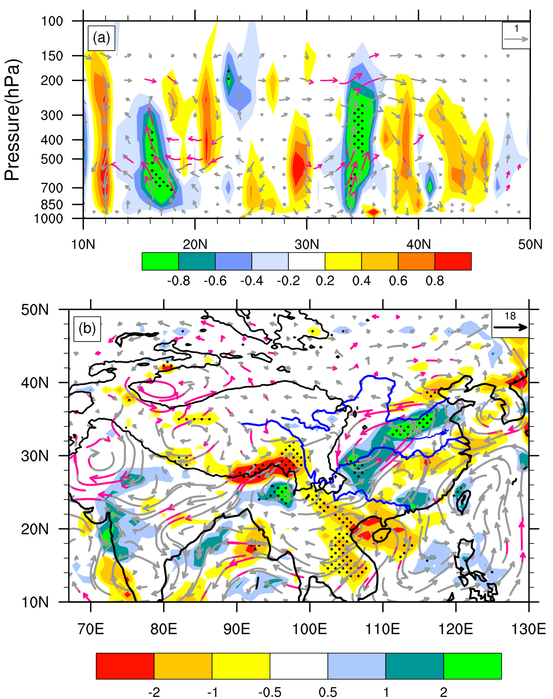
ANexp与BNexp之间的夏季差值场：(a) 110°–120°E平均的气压—纬度剖面，其中矢量由经向速度（m s⁻¹）和垂直速度（彩色阴影，10⁻² Pa s⁻¹）组成；(b) 降水（彩色阴影，mm day⁻¹）和从地表积分至300 hPa的大气柱水汽通量（矢量，kg m⁻¹ s⁻¹）。
Difference fields between ANexp and BNexp in summer: (a) pressure–latitude cross section of the vectors composed of meridional velocity (m s⁻¹) and vertical velocity (color shading, 10⁻² Pa s⁻¹), averaged from 110° to 120°E; (b) precipitation (color shading, mm day⁻¹) and atmospheric column water vapor flux (vectors, kg m⁻¹ s⁻¹) integrated from the surface to 300 hPa.
(b)中的点状区域和红色矢量表示达到95%置信水平。
The dotted areas and red vectors in (b) indicate statistical significance at the 95% confidence level.
(b)中的黑色曲线勾勒出平均海拔>2000 m的TP区域。
The black curve in (b) outlines the TP area with an average altitude >2000 m.
显然，ANexp中沿34°N的垂直运动增强，与资料诊断结果相似（Fig. 11c）。
Clearly, the vertical motion is enhanced along 34°N in ANexp, similar to the data diagnosis results (Fig. 11c).
Fig. 15b绘出了夏季降水和大气柱水汽通量的差值场（ANexp减BNexp）；可以看出，5月积雪偏多因加热率较弱而有利于夏季TP上空的水汽辐散，并对应局地降水受抑。
The difference fields (between ANexp and BNexp) of summer precipitation and atmospheric column water vapor flux are plotted in Fig. 15b, and we can see that the above-normal snow in May is conducive to water vapor divergence over the TP in summer due to the weaker heating rate, corresponding to suppressed local precipitation.
与此同时，一条显著的正降水异常带连同水汽辐合区从长江中游延伸至中国北方（Fig. 15b），这同样与观测结果相似（Fig. 9）。
Meanwhile a noticeable positive rainfall belt, together with a moisture convergence zone, extends from the middle reaches of the Yangtze River to northern China (Fig. 15b), which again resembles the observed results (Fig. 9).
由于模式偏差和/或试验设计，模拟的主雨带位置略偏北，源自TP的水汽向东输送弱于观测，而观测中位于南海上空的反气旋异常则移至中南半岛。
Owing to the model bias and/or experiment design, the main rainfall belt is simulated at a slightly northward location, the eastward transportation of water vapor originated from the TP is weaker than observed, and the observed anticyclone anomaly over the South China Sea moves to Indochina.
然而，TP下游的正降水异常带如何响应TP积雪异常？
But how does the positive rainfall belt anomaly downstream of the TP respond to the snow cover anomaly over the TP?
如上所述，TP西部和喜马拉雅山脉的积雪异常可持续至夏季（Fig. 16a），并通过雪—反照率效应（Fig. 16b）使局地净短波辐射减少。
As discussed above, the snow anomaly over the western TP and Himalayas can last until summer (Fig. 16a), leading to reduced local net shortwave radiation via the snow–albedo effect (Fig. 16b).
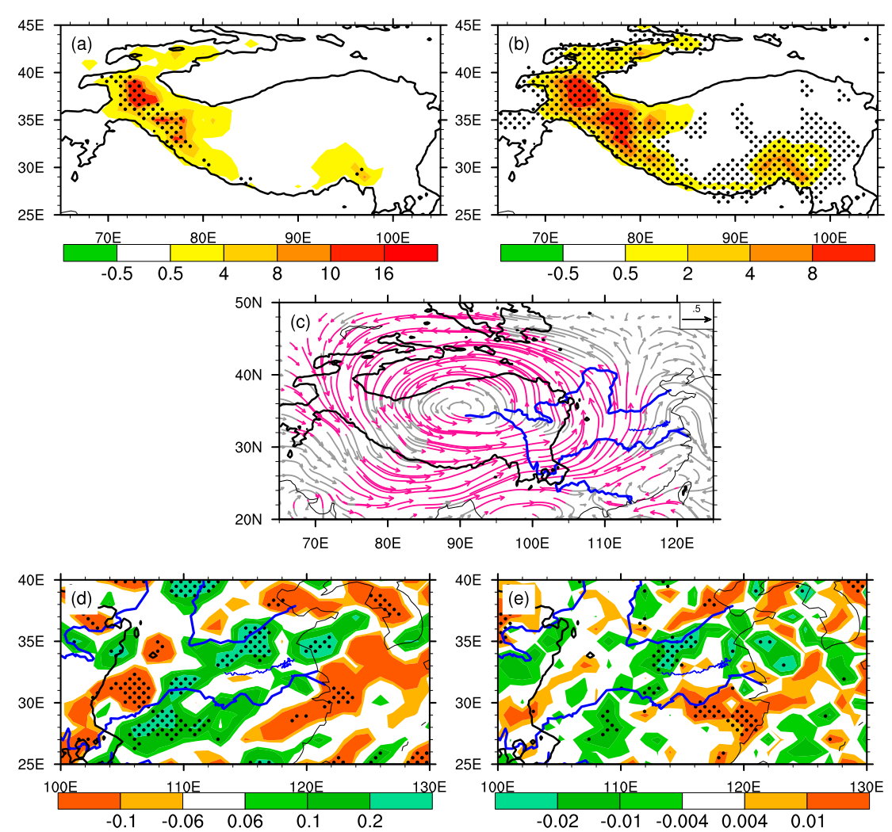
ANexp与BNexp之间的夏季差值场：(a) SWE（mm）；(b) 地表反照率（%）；(c) 200-hPa风场（m s⁻¹）；(d) 200-hPa散度（s⁻¹）；(e) 500-hPa垂直速度（Pa s⁻¹）。
Difference fields between ANexp and BNexp in summer: (a) SWE (mm); (b) surface albedo (%); (c) 200-hPa wind field (m s⁻¹); (d) 200-hPa divergence (s⁻¹); (e) 500-hPa vertical velocity (Pa s⁻¹).
点状区域和红色矢量表示达到95%置信水平。
The dotted areas and red vectors indicate statistical significance at the 95% confidence level.
黑色曲线勾勒出平均海拔>2000 m的TP区域。
The black curve outlines the TP area with an average altitude >2000 m.
(c)–(e)中的蓝色曲线从北到南分别表示黄河、淮河和长江。
The blue curves in (c)–(e) represent from north to south, the Yellow, Huaihe, and Yangtze Rivers.
因此，TP地表降温并削弱夏季南亚高压（Fig. 16c），进而增强上层抽吸效应（Fig. 16d），有利于长江和黄河流域之间的上升运动（Fig. 16e）。
Thus, the TP surface cools down and weakens the South Asian high in summer (Fig. 16c), which further enhances the upper pumping effect (Fig. 16d) and benefits ascending motion (Fig. 16e) between the Yangtze and Yellow River basins.
根据Liu et al. (2001)，夏季副热带地区的涡度方程可简化为：∂ζ_z/∂t ∝ [(f + ζ_z)/θ_z](∂Q/∂z), θ_z ≠ 0.
According to Liu et al. (2001), the vorticity equation can be simplified over the subtropical region in summer as: ∂ζ_z/∂t ∝ [(f + ζ_z)/θ_z](∂Q/∂z), θ_z ≠ 0.
因此，在对流层低层，降水凝结释放的潜热随高度增加，从而产生正涡度和低层气旋性环流异常。
Thus, the latent heat released by condensation of precipitation increases with height in the lower troposphere, resulting in the generation of positive vorticity and a cyclonic circulation anomaly in the lower troposphere.
然而，在对流层中上层，加热率在加热中心上方随高度降低，从而引起负涡度异常并加强对流层上层辐散。
In the mid- and upper troposphere, however, the heating rate decreases with height above the heating center, induces a negative vorticity anomaly, and intensifies upper tropospheric divergence.
因此，环流与非绝热加热的正反馈加强了局地垂直运动，继而有利于长江流域与黄河流域之间出现夏季降水偏多。
Therefore, the positive feedback of circulation and diabatic heating enhances local vertical motion and then benefits above-normal summer precipitation between the Yangtze and Yellow River basins.
在另一项试验中，WRF Model由TP中部和东部的卫星SWE驱动（SWE强迫施加于1月1日至4月30日），长江和黄河流域之间的夏季风场和降水异常并不明显（图略）。
With the WRF Model driven by satellite SWE (SWE forcing from 1 January to 30 April) over the central and eastern TP in another experiment, the anomalies in the summer wind field and precipitation between the Yangtze and Yellow River basins are not apparent (figure not shown).
尽管如此，数值模拟证实，TP西部和喜马拉雅山脉的积雪异常能够影响EASM，主要方式是调节环流和水汽条件。
Nevertheless, the numerical simulations confirm that the snow cover anomalies over the western TP and the Himalayas can influence the EASM, mainly by modulating the circulation and moisture conditions.
6. 讨论与结论6. Discussion and conclusions
6. 讨论与结论
6. Discussion and conclusions
基于1979–2011年多源观测资料，本文主要从雪—反照率效应和雪—水文效应两方面讨论TP积雪与EASM之间的关系。
Based on observational data from multiple sources for the period 1979–2011, this paper primarily discusses the relationship between TP snow cover and the EASM in terms of the snow–albedo and snow–hydrology effects.
结果表明，由于反照率效应和水文效应持续时间较短，TP中部和东部的冬季积雪可能不会影响EASM，而且冬季积雪只能持续至晚春。
The results show that winter snow cover over the central and eastern TP may not influence the EASM due to its short-term albedo and hydrology effects, and winter snow cover can only persist into late spring.
与此同时，冬季积雪通过降低地表净太阳辐射，对局地气温产生显著冷却作用；TP冻土分布广泛在一定程度上解释了雪—水文效应持续时间较短的原因。
Winter snow cover simultaneously exerts a considerable cooling effect on local air temperature through decreasing surface net solar radiation, and the pervasiveness of frozen soil across the TP explains the short-term snow–hydrology effect to some degree.
尽管TP西部和喜马拉雅山脉的积雪从5月持续至夏季，但雪—反照率效应并不重要，因此对气温的冷却作用相对较弱。
Although snow cover persists over the western TP and the Himalayas from May to summer, the snow–albedo effect is unimportant, and thus the cooling effect on air temperature is relatively weak.
进一步分析表明，无论在TP中部和东部还是整个TP，积雪与夏季大气热源之间的关系都较弱。
Further analysis indicates that there is a poor relationship between snow cover and the summer atmospheric heat source in either the central and eastern TP or the entire TP.
TP积雪可能不会通过改变局地夏季大气热源来影响EASM，但TP西部和喜马拉雅山脉的积雪可能通过局地蒸散提供更多水汽、在TP上生成向东传播的天气尺度扰动，以及借助中国南部的南风异常调节水汽输送路径，从而影响EASM。
Snow cover over the TP may not influence the EASM by altering local summer atmospheric heat sources, but the snow cover over the western TP and the Himalayas may influence the EASM by providing more water vapor from local evapotranspiration, generating eastward-propagating synoptic disturbances over the TP and modulating water vapor transport routes via the southerly anomaly over southern China.
随后，长江和黄河流域之间出现降水偏多，这是由水汽辐合以及来自TP、向东传播的天气尺度扰动激发的。
Excessive precipitation then occurs between the Yangtze and Yellow River basins, which is stimulated by water vapor convergence and eastward-propagating synoptic disturbances from the TP.
最后，我们从模式模拟中得到相似结果；即TP 5月积雪偏多将导致长江和黄河流域夏季降水偏多。
Finally, we obtain similar results from model simulations; that is, above-normal snow over the TP in May will result in above-normal summer rainfall over the Yangtze and Yellow River basins.
但我们仍可发现，模式模拟结果并非在各方面都与资料分析严格吻合；积雪数据集的不确定性、模式偏差和模拟设计都可能是其原因。
But we still can find that model simulation results do not strictly match data analysis in each aspect; the uncertainties of snow datasets, model bias, and simulation design are potential causes.
因此，未来仍需开展更为细致的分析。
Thus more detailed analysis still needs to be carried out in the future.
以往研究（Chen et al. 2000; Zhang and Tao 2001; Wu and Qian 2003）认为，TP积雪偏多可能削弱EASM。
Previous studies (Chen et al. 2000; Zhang and Tao 2001; Wu and Qian 2003) have argued that excessive TP snow cover may weaken the EASM.
采用Wang et al. (2008)提出的EASM指数，我们得到了相似结果：SCAP与EASM指数之间的相关系数为−0.58（达到99%置信水平；补充材料中的Fig. S3）。
We find a similar result, using the EASM index suggested by Wang et al. (2008), with a correlation coefficient of −0.58 (significant at the 99% confidence level) between SCAP and the EASM index (Fig. S3 in the supplementary material).
尽管东亚的季节转换在TP积雪偏多年与偏少年之间差异很小（补充材料中的Fig. S4），但TP积雪对EASM强度和季节转换的不同影响仍需进一步研究。
While the seasonal transition over East Asia shows little difference between above- and below-normal TP snow cover years (Fig. S4 in the supplementary material), the different influences of TP snow cover on EASM strength and seasonal transition need to be studied further.
东亚夏季主雨带存在大幅经向摆动（Tao and Chen 1987; Lin and Lu 2009），应考虑这一显著的季节内经向位移。
The main summer rainband in East Asia shows a large meridional excursion (Tao and Chen 1987; Lin and Lu 2009), and this remarkable subseasonal meridional shift should be considered.
各月的降水特征可能有所不同。
The characteristics of the rainfall may be different in each month.
因此，未来最好研究东亚逐月夏季降水与TP积雪之间的关系。
Thus, in the future, it would be better to study the relationship between the monthly summer precipitation in East Asia and TP snow cover.
本研究仅关注长江和黄河流域的一个最重要原因是，6月至8月整个流域的降水与TP积雪之间持续呈正相关（补充材料中的Fig. S5），而东亚其他地区的信号在此期间并不连续。
One of the most important reasons why we focus only on the Yangtze and Yellow River basins in this study is that there is a persistent positive correlation between precipitation and TP snow cover across the basin from June to August (Fig. S5 in the supplementary material), while the signals in other parts of East Asia are discontinuous during this period.
考虑到过去50年中ENSO–EASM关系有所增强（Li et al. 2010），未来工作必须更加关注ENSO效应，而不是将其去除。
Considering the enhanced ENSO–EASM relationship within the past 50 years (Li et al. 2010), the ENSO effect must also receive more attention in future work, rather than being removed.
致谢Acknowledgments
致谢
Acknowledgments
本研究由国家自然科学基金（项目91337216、41175070和41605038）以及中国财政部和科学技术部管理的公益性行业（气象）科研专项（项目GYHY201406001）共同资助。
This work was jointly supported by the National Natural Science Foundation of China (Grants 91337216, 41175070, and 41605038), and the Special Fund for Public Welfare Industry (meteorology) administered by the Chinese Ministry of Finance and the Ministry of Science and Technology (Grant GYHY201406001).
补充材料前置信息Supplementary information front matter
《青藏高原积雪覆盖对东亚夏季风年际变率的影响》补充材料
Supplement of Impacts of Tibetan Plateau snow cover on the interannual variability of the East Asian summer monsoon
Z. X. Xiao和A. M. Duan
Z. X. Xiao and A. M. Duan
通讯作者：A. M. Duan（amduan@lasg.iap.ac.cn）
Corresponding author: A. M. Duan (amduan@lasg.iap.ac.cn)
补充图注Supplementary figure captions
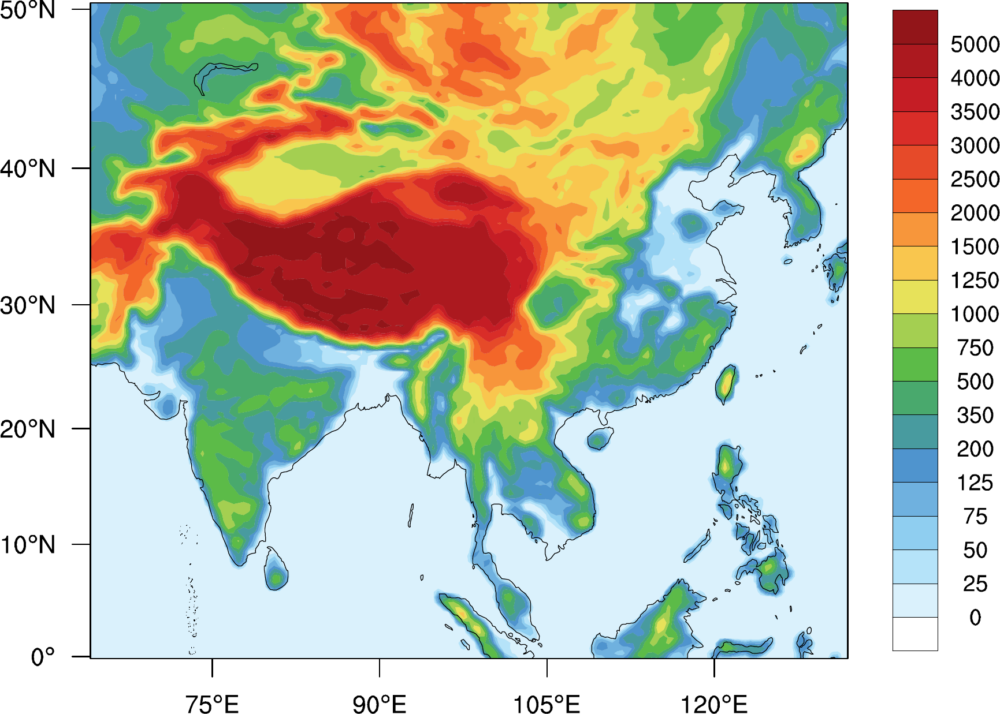
WRF模式区域和地形高度（阴影，单位：m）。
WRF model domain and terrain height (shading, units: m).
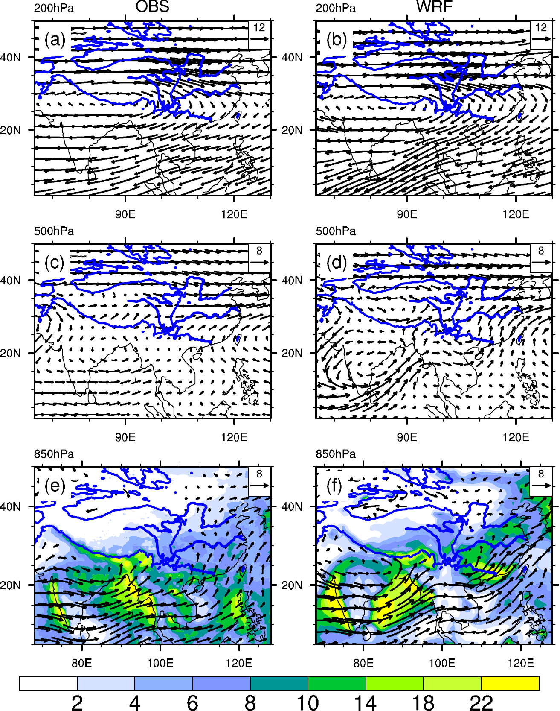
ERA-Interim（左列）和WRF控制试验（右列）中的夏季200 hPa (a–b)、500 hPa (c–d)和850 hPa (e–f)风矢量（m s⁻¹）及降水分布［e–f，取自TRMM 3B42V7；阴影，mm day⁻¹］。
Distribution of summer 200 hPa (a–b), 500 hPa (c–d) and 850 hPa (e–f) wind vectors (m s⁻¹) and precipitation (e–f, obtained from TRMM 3B42V7, shaded, mm day⁻¹) in ERA-Interim (left column) and WRF control experiment (right column).
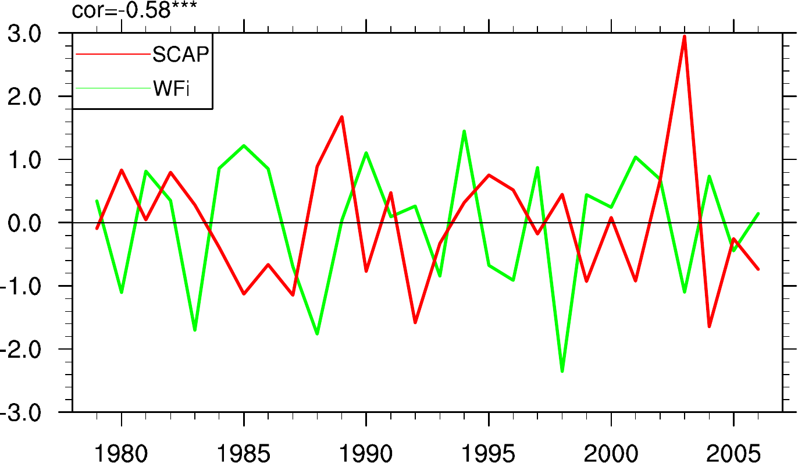
Wang et al. (2008)定义的5月SCAP指数（红线）和EASM指数（绿线）的标准化时间序列。
The standardized time series of May SCAP index (red line) and the EASM index (green line) as defined by Wang et al. (2008).
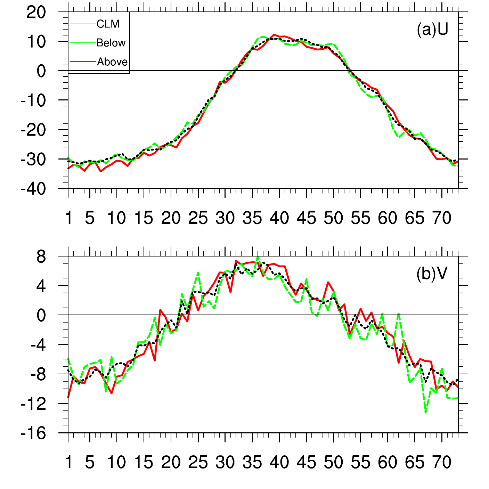
ERA-Interim再分析中，由200与850 hPa之间纬向风(a)和经向风(b)垂直切变定义的候平均EASM指数年循环。
Annual cycle of pentad-mean EASM index defined by the vertical shear of zonal wind (a) and meridional wind (b) between 200 and 850 hPa in ERA-Interim reanalysis.
单位：m s⁻¹。
Units: m s⁻¹.
黑线：气候态；红（绿）线：积雪偏多（偏少）年份的合成。
Black lines: climatology; red (green) lines: composite of above- (below-) normal snow cover years.
EASM指数由Dai et al. (2013)定义。
The EASM index was defined by Dai et al. (2013).
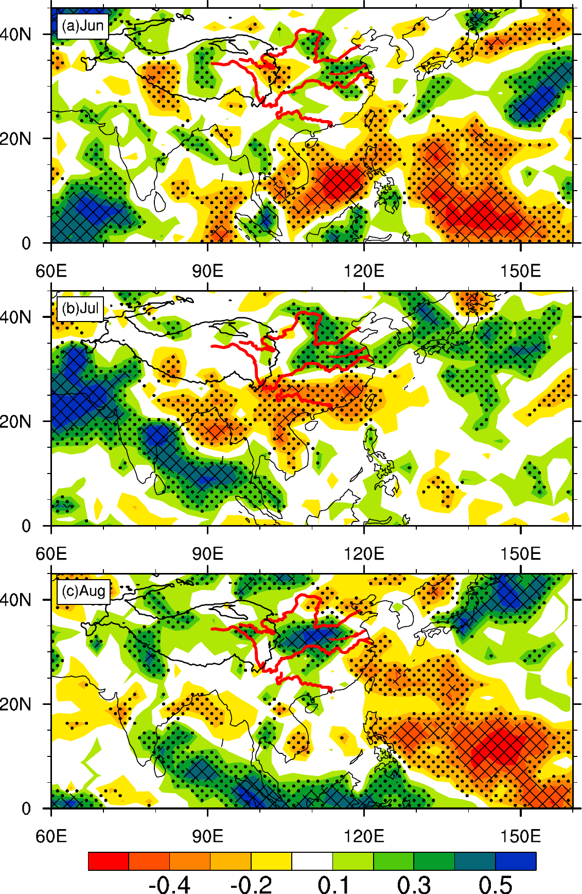
1979–2006年5月SCAP指数与CMAP降水之间的相关系数；所有变量均已去除ENSO信号。
The correlation coefficients between the May SCAP index and CMAP precipitation for the period 1979–2006; the ENSO signals have been removed from all of the variables.
根据Student’s t检验，点状（网格阴影）区域达到90%（95%）置信水平。
Dotted (meshed) areas are significant at the 90% (95%) confidence level according to Student’s t test.
(a) 6月，(b) 7月，(c) 8月。
(a) June, (b) July, and (c) August.
红色曲线从北到南分别表示黄河、淮河、长江和珠江。
The red curves represent, from north to south, Yellow River, Huaihe River, Yangtze River and Zhujiang River.